<!doctype html>
<html lang="en">
<head>
  <meta charset="utf-8">
  <meta name="viewport" content="width=device-width, initial-scale=1">
  <title>arxiv digest — 2026-10-06</title>
  <style>
:root {
  --bg: #ffffff;
  --fg: #1f2328;
  --muted: #59636e;
  --border: #d0d7de;
  --card: #f6f8fa;
  --link: #0969da;
}
body {
  max-width: 980px;
  margin: 0 auto;
  padding: 2rem 1rem 5rem;
  font-family: -apple-system, BlinkMacSystemFont, "Segoe UI", Helvetica, Arial, sans-serif;
  line-height: 1.55;
  color: var(--fg);
  background: var(--bg);
}
a { color: var(--link); }
img { max-width: 100%; height: auto; }
pre, code { background: var(--card); border-radius: 6px; }
pre { padding: 1rem; overflow-x: auto; }
blockquote { border-left: 4px solid var(--border); padding-left: 1rem; color: var(--muted); }
details { margin: 0.6rem 0; }
summary { cursor: pointer; font-weight: 600; }
.paper-figures-scroll {
  display: flex;
  gap: 1rem;
  overflow-x: auto;
  overscroll-behavior-x: contain;
  padding: 0.75rem 0.25rem 1rem;
  margin: 1rem 0 1.25rem;
  border-top: 1px solid var(--border);
  border-bottom: 1px solid var(--border);
  scroll-snap-type: x proximity;
}
.paper-figure-card {
  flex: 0 0 min(260px, 72vw);
  scroll-snap-align: start;
  background: var(--card);
  border: 1px solid var(--border);
  border-radius: 12px;
  padding: 0.55rem;
}
.paper-figure-card img {
  display: block;
  width: 100%;
  max-height: 240px;
  object-fit: contain;
  background: white;
  border-radius: 8px;
}
.paper-figure-caption {
  display: block;
  margin-top: 0.5rem;
  color: var(--muted);
  font-size: 0.85rem;
}
.figure-strip-hint {
  color: var(--muted);
  font-size: 0.9rem;
  margin-bottom: -0.3rem;
}
</style>
  <!-- MathJax: renders $...$ inline math and $$...$$ display math, plus
       \(...\) and \[...\]. Loaded from the official CDN; works offline
       once cached. Configured to skip code/pre blocks so arxiv IDs that
       look like dollar amounts don't get mangled. -->
  <script>
    window.MathJax = {
      tex: {
        inlineMath: [['$', '$'], ['\\(', '\\)']],
        displayMath: [['$$', '$$'], ['\\[', '\\]']],
        processEscapes: true,
        processEnvironments: true
      },
      options: {
        skipHtmlTags: ['script', 'noscript', 'style', 'textarea', 'pre', 'code'],
        ignoreHtmlClass: 'tex2jax_ignore',
        processHtmlClass: 'tex2jax_process'
      }
    };
  </script>
  <script id="MathJax-script" async
    src="https://cdn.jsdelivr.net/npm/mathjax@3/es5/tex-chtml.js"></script>
</head>
<body>
<header style="background-color: #333; color: white; padding: 15px; margin-bottom: 20px;">
  <h1 style="margin: 0; font-size: 24px;">
    <a href="https://ochelpan.github.io/arXiv_clean/" style="color: white; text-decoration: none;">Main</a>
  </h1>
</header>

<h1>Daily arXiv Report</h1>

<hr>
<p>
<a href="index.html">← Index</a>
 · <a href="papers_02.html">Next →</a>
</p>
<hr>

<h2>Papers 1–20</h2>
<p><a id="paper-2610.03492"></a></p>
<h3 id="efficient-sampling-for-many-body-fermionic-non-gaussianity">⭐ <a href="http://arxiv.org/abs/2610.03492v1">Efficient Sampling for Many-Body Fermionic Non-Gaussianity</a></h3>
<p><strong>Highlighted author(s):</strong> Yuto Ashida<br>
<strong>Authors:</strong> Ryota Matsuda, Masahiro Hoshino, Yuto Ashida<br>
<strong>Type:</strong> theory · <strong>Category:</strong> numerical methods · <strong>PDF:</strong> <a href="https://arxiv.org/pdf/2610.03492v1">https://arxiv.org/pdf/2610.03492v1</a><br>
<strong>Analysis basis:</strong> full PDF text, analyzed in chunks
<strong>Topic relevance:</strong> <code>Keldysh / 2PI / non-Gaussian methods</code> <strong>1/5</strong> · <code>analog quantum simulation</code> <strong>1/5</strong> · <code>methods for driven-dissipative</code> <strong>1/5</strong></p>
<div class="figure-strip-hint">↔ Scroll figures horizontally</div>
<div class="paper-figures-scroll">
<figure class="paper-figure-card">
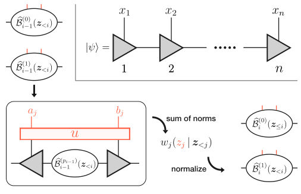
<figcaption class="paper-figure-caption"><b>Fig 1.</b> FIG. 1. Schematic illustration of the perfect-sampling sweep. The two parity-resolved boundary matrices encode the sampled prefix and are contracted with the local tensors of the input MPS and the beam splitter to obtain the conditional probabilities at each site. After the local output is sampled, the corresponding matrices are normalized and passed to the next site, yielding an exact Born sample without constructing the convolved MPS.</figcaption>
</figure>
<figure class="paper-figure-card">
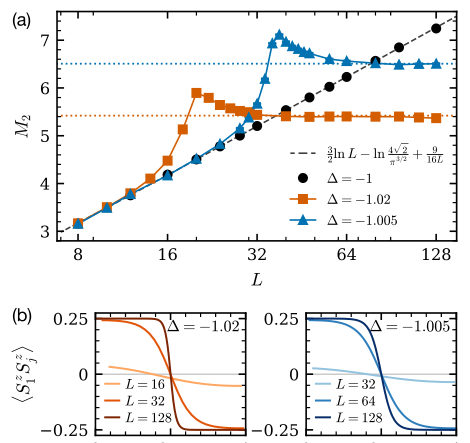
<figcaption class="paper-figure-caption"><b>Fig 2.</b> FIG. 2. (a) Second-order MRE of the ground state as a function of the number of sites L. At ∆= −1, the dashed black line is the large- L asymptotic form (18), and the circles are the perfect sampling from the exact MPS. The squares and triangles are the perfect sampling from the DMRG states at ∆= −1.02 and −1.005, connected by solid curves as guides, and the dotted horizontal lines are Eq. (19). The standard errors are smaller than 0.01 for all points. (b) shows the spin- spin correlation function Sz 1Sz j at ∆= −1.02 for L = 16, 32, 128 and ∆= −1.005 for L = 32, 64, 128.</figcaption>
</figure>
</div>

<p><strong>Summary.</strong> This paper introduces a novel, efficient perfect-sampling algorithm to calculate the Magic Rényi Entropy ($    ext{M}_2    ext{RE}$), a resource measure quantifying fermionic non-Gaussianity. By operating directly on Matrix Product States, the method achieves polynomial scaling ($\mathcal{O}(nD^3)$) with system size. This allows researchers to quantitatively probe higher-order quantum correlations in fermionic systems like the XXZ chain, which are inaccessible to standard covariance-based measures.</p>
<p><strong>Why it may be interesting.</strong> The development of a polynomial-time sampling technique for higher-order correlation measures like $ ext{M}_2    ext{RE}$ is crucial for simulating complex quantum many-body physics that goes beyond simple quadratic Hamiltonians.</p>
<details>
<summary>Detailed structure</summary>
<p><strong>Main problem.</strong> The primary challenge is developing an efficient computational method to calculate the second-order Magic Rényi Entropy ($    ext{M}_2    ext{RE}$) for fermionic non-Gaussianity, as exact evaluation scales exponentially with system size.</p>
<p><strong>Main result.</strong> The authors developed a perfect-sampling method that calculates $  ext{M}_2    ext{RE}$ in polynomial time ($\mathcal{O}(nD^3)$), successfully demonstrating that this measure captures higher-order correlations inaccessible to simpler covariance-based metrics.</p>
<p><strong>Method.</strong> The method employs a perfect-sampling technique using a bounded estimator and a recursive sweep to sample directly from Matrix Product States (MPSs), avoiding the explicit construction of replicated tensor networks.</p>
<p><strong>Model / system.</strong> The study focuses on many-body fermionic systems, benchmarked on the XXZ chain of spinful fermions, which are represented using a right-canonical MPS formalism.</p>
<p><strong>Key observables.</strong> Fermionic non-Gaussianity, quantified by the $ ext{M}_2    ext{RE} = -\ln 
u_2$, and the purity $
u_2$ of the convolved state.</p>
<p><strong>Important parameters / regimes.</strong> System size ($L$), MPS bond dimension ($D$), and the anisotropy parameter ($\Delta$) of the XXZ chain.</p>
<p><strong>Assumptions / limitations.</strong> The method assumes the input state is represented by a right-canonical MPS and utilizes a bounded estimator to control sampling fluctuations.</p>
<p><strong>Figures summary.</strong> Figures illustrate the MRE scaling for the XXZ chain, showing agreement with known analytical results for $\Delta=-1$ and saturation behavior for $\Delta<-1$. Other figures detail the structure of the sampling sweep using boundary matrices.</p>
<p><strong>Paper structure.</strong> The paper develops the perfect-sampling technique for $    ext{M}_2    ext{RE}$ calculation, benchmarks it on the XXZ chain to confirm polynomial scaling and physical accuracy, and analyzes the saturation of the non-Gaussianity measure in different regimes.</p>
</details>
<details>
<summary>Abstract</summary>
<p>Fermionic non-Gaussianity is a key resource for universal quantum computation, and its behavior in quantum many-body systems has attracted growing interest. Recently, a convolution-based measure, which we call the magic Rényi entropy (MRE), has been proposed as a resource measure of non-Gaussianity, but its evaluation is limited to small systems due to the computational cost growing exponentially with system size. In this work, we develop a perfect-sampling method to calculate the second-order MRE from matrix product states (MPSs). Our method uses a bounded estimator to control sampling fluctuations and a recursive sweep to draw the samples directly from the input MPS, which allows us to generate each sample with $\mathcal O(nD^3)$ time, where $n$ and $D$ denote the number of modes and MPS bond dimension, respectively. We benchmark our method on the XXZ chain with up to $128$ sites, demonstrating that the MRE captures intricate higher-order correlations at large scales, which are inaccessible to covariance-based measures. These results provide a computational tool that quantitatively evaluates many-body fermionic non-Gaussianity by accounting for higher-order correlations.</p>
</details>
<p><sub><a href="#top">↑ back to top</a></sub></p>

<p><a id="paper-2610.03605"></a></p>
<h3 id="efficient-fidelity-simulation-of-high-rate-magic-distillation-circuits">⭐ <a href="http://arxiv.org/abs/2610.03605v1">Efficient fidelity simulation of high-rate magic distillation circuits</a></h3>
<p><strong>Highlighted author(s):</strong> Mikhail D. Lukin<br>
<strong>Authors:</strong> Xiao Xiao, Dominik Hangleiter, J. Pablo Bonilla Ataides, Rohan Mehta, Varun Menon, Mikhail D. Lukin, Michael J. Gullans<br>
<strong>Type:</strong> theory · <strong>Category:</strong> quantum information and computing · <strong>PDF:</strong> <a href="https://arxiv.org/pdf/2610.03605v1">https://arxiv.org/pdf/2610.03605v1</a><br>
<strong>Analysis basis:</strong> full PDF text, analyzed in chunks
<strong>Topic relevance:</strong> <code>methods for driven-dissipative</code> <strong>1/5</strong></p>
<div class="figure-strip-hint">↔ Scroll figures horizontally</div>
<div class="paper-figures-scroll">
<figure class="paper-figure-card">
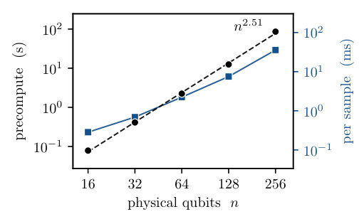
<figcaption class="paper-figure-caption"><b>Fig 1.</b> FIG. 1: Cost of the fidelity estimation pipeline on one CPU versus the number of physical qubits n, for the hypercube-IQP circuits using the [[8, 3, 2]] code [10]. Black circles: one-time precomputation (simulator con- struction, back-propagation of faults and measured sta- bilizers, and the fault–measurement commutator tables), with a fitted power law n2.51 (dashed). Blue squares: cost per Monte-Carlo sample, obtained by subtracting the precomputation from the total run time and divid- ing by the number of samples. No power law is quoted for the latter because its local slope still rises across this range (1.3 →2.3). See Section S4.3 for the scaling of the individual subroutines.</figcaption>
</figure>
<figure class="paper-figure-card">
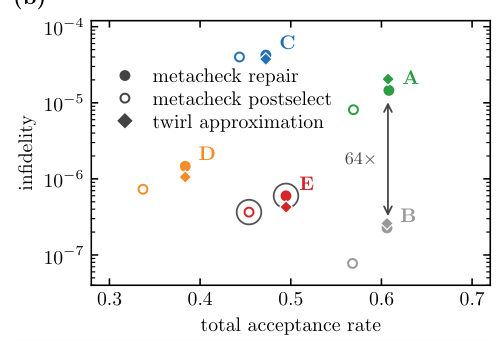
<figcaption class="paper-figure-caption"><b>Fig 2.</b> FIG. 2: (a) Protocol E: three [[27,3,3]] data blocks are prepared in |+⟩L, a depth-2 transversal CCZ circuit builds the encoded hypergraph state, and one shared an- cilla block Ash extracts the post-CCZ Z syndrome. (b) Infidelity of the 9-qubit hypergraph state versus total ac- ceptance rate for five treatments of the Z syndrome — A: none. B: noiseless (lower bound). C: bare ancillas. D: one Steane block per data block. E: one shared block, circled, as drawn in (a) — with the prep metachecks re- paired (filled circle) or postselected (hollow). The dia- mond data points correspond to results with the approx- imation using twirling [21]. The double arrow marks the A–B gap. Simulations were...</figcaption>
</figure>
</div>

<p><strong>Summary.</strong> This paper presents efficient classical simulation techniques to benchmark the fault-tolerant performance of quantum circuits involving non-Clifford gates. By focusing on syndrome sampling and observable expectation values rather than full simulation, the authors achieve polynomial scaling. This methodology is practically demonstrated by optimizing high-rate magic state distillation factories.</p>
<p><strong>Why it may be interesting.</strong> The techniques developed for efficiently simulating fault-tolerant circuits are highly relevant for understanding the performance limits of quantum computation hardware.</p>
<details>
<summary>Detailed structure</summary>
<p><strong>Main problem.</strong> Developing exact and efficient classical methods to benchmark the fault-tolerant performance of quantum circuits containing non-Clifford gates.</p>
<p><strong>Main result.</strong> The developed algorithms scale polynomially in physical qubits and circuit depth, allowing for the optimization of high-rate magic state distillation factories.</p>
<p><strong>Method.</strong> The approach uses Monte Carlo methods to sample syndrome statistics and estimate logical fidelity and Pauli observable expectation values, avoiding full circuit simulation.</p>
<p><strong>Model / system.</strong> The study focuses on circuits composed of X, CNOT, and diagonal gates belonging to the Clifford hierarchy, particularly analyzing AD(3) and AD(4) circuits used in quantum error correction.</p>
<p><strong>Key observables.</strong> Logical fidelity, expectation values of Pauli observables, and syndrome statistics.</p>
<p><strong>Important parameters / regimes.</strong> Physical qubits (n), circuit depth (T), and the level of the diagonal gate ($\ell$).</p>
<p><strong>Assumptions / limitations.</strong> The efficiency relies on the structure of error propagation following a hierarchy reduction, and certain fidelity calculations assume ideal mapping between reference subspaces.</p>
<p><strong>Figures summary.</strong> Figures compare computational cost scaling for fidelity estimation on hypercube-IQP circuits and compare infidelity vs. acceptance rate for different Z syndrome extraction protocols.</p>
<p><strong>Paper structure.</strong> The paper develops general algorithms for syndrome sampling and observable estimation for AD($\ell$) circuits, applies these to IQP sampling, and demonstrates utility by optimizing magic state distillation using a [[27,3,3]] code.</p>
</details>
<details>
<summary>Abstract</summary>
<p>Non-Clifford gates are essential for avoiding classical simulability under the Gottesman-Knill theorem. An error-corrected circuit with non-Clifford gates will therefore be an important element for realizing useful fault-tolerant quantum algorithms. However, accurately understanding the fault-tolerant performance of such circuits faces challenges due to the classical hardness of simulating these circuits. We avoid simulating logical measurements and develop exact and efficient classical methods for benchmarking circuits composed of X, CNOT, and diagonal gates in the Clifford hierarchy, including state and gate teleportation gadgets with feedforward. For circuits with third-level diagonal gates, our benchmarking algorithm efficiently samples syndrome statistics and estimates the output logical fidelity and expectation values of certain Clifford observables, including all Pauli observables. The evaluation of syndrome expectation values also extends to circuits with fourth-level diagonal gates. Our algorithm scales polynomially in the number of physical qubits n and circuit depth T, independent of the number of logical qubits. The benchmarking applications include IQP sampling and magic state preparation/cultivation. We demonstrate the practical utility of our simulation algorithms by using them to optimize high-rate magic state distillation factories based on three copies of a [[27,3,3]] tricycle code.</p>
</details>
<p><sub><a href="#top">↑ back to top</a></sub></p>

<p><a id="paper-2610.03133"></a></p>
<h3 id="infrared-memory-of-a-majorana-shutter"><a href="http://arxiv.org/abs/2610.03133v1">Infrared Memory of a Majorana Shutter</a></h3>
<p><strong>Authors:</strong> Ali Vahedi<br>
<strong>Type:</strong> theory · <strong>Category:</strong> other · <strong>PDF:</strong> <a href="https://arxiv.org/pdf/2610.03133v1">https://arxiv.org/pdf/2610.03133v1</a><br>
<strong>Analysis basis:</strong> full PDF text, analyzed in chunks
<strong>Topic relevance:</strong> 🔥 <code>non-equilibrium universality</code> <strong>4/5</strong> · <code>Keldysh / 2PI / non-Gaussian methods</code> <strong>3/5</strong> · <code>analog quantum simulation</code> <strong>3/5</strong> · <code>correlated / nonlocal dissipation</code> <strong>3/5</strong> · <code>driven-dissipative phase transition</code> <strong>3/5</strong> · <code>methods for driven-dissipative</code> <strong>3/5</strong> · <code>scars &amp; prethermalization</code> <strong>3/5</strong> · <code>quantum measurements</code> <strong>2/5</strong></p>
<div class="figure-strip-hint">↔ Scroll figures horizontally</div>
<div class="paper-figures-scroll">
<figure class="paper-figure-card">
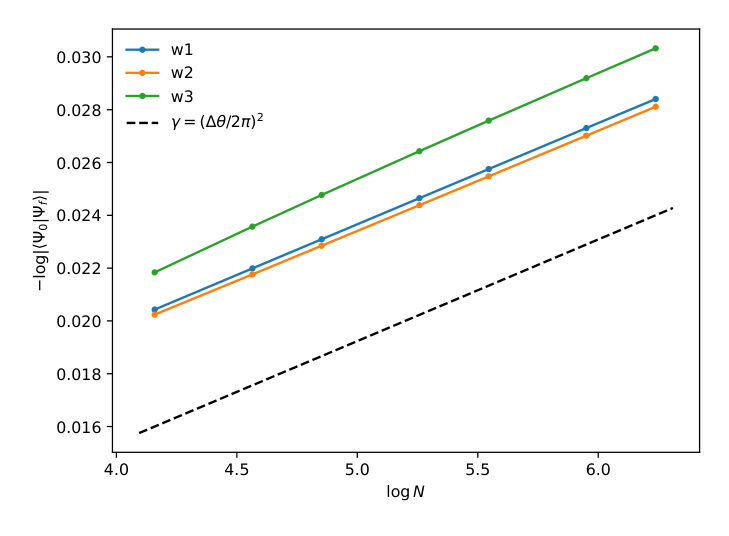
<figcaption class="paper-figure-caption"><b>Fig 1.</b> Figure 1: Ground-state overlap as a finite-size BCC/orthogonality diagnostic at λf = 0.4, a = 2. The lattice data for three smooth profiles follow a common power law. The dashed line uses the parameter-free infrared prediction γAO = (∆θ/2π)2. Profile dependence is visible only at the finite-size level and is substantially smaller than the leading power-law scaling signal.</figcaption>
</figure>
<figure class="paper-figure-card">
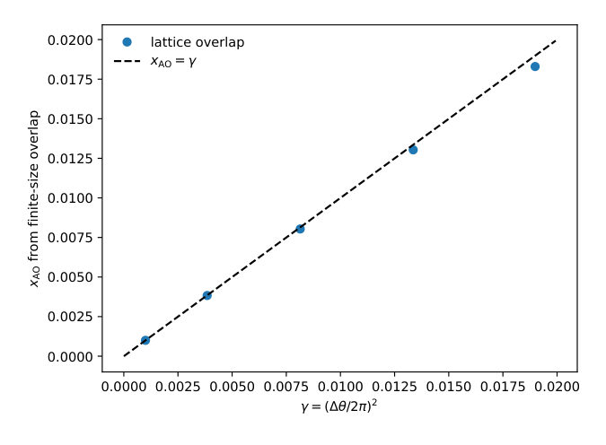
<figcaption class="paper-figure-caption"><b>Fig 2.</b> Figure 2: Extracted orthogonality exponent versus the scattering prediction γAO = (∆θ/2π)2. The numerical exponent is obtained from finite-size ground-state overlaps. The diagonal line is not a fit; it is the analytic scattering prediction.</figcaption>
</figure>
<figure class="paper-figure-card">
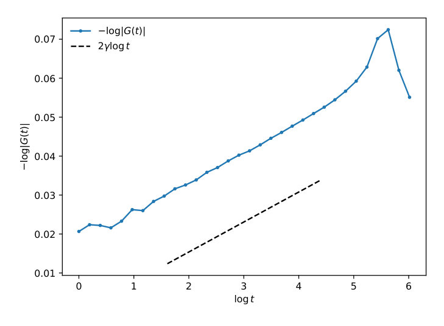
<figcaption class="paper-figure-caption"><b>Fig 3.</b> Figure 3: Loschmidt amplitude after a sudden switch for N = 512, a = 2, w1, and λf = 0.4. The pre-revival data give slopes in the range 0.00773–0.00804 for the fit windows listed in the text, compared with 2γAO = 0.007695. The late-time deviation is a finite-size recurrence effect, not an LCFT signature.</figcaption>
</figure>
<figure class="paper-figure-card">
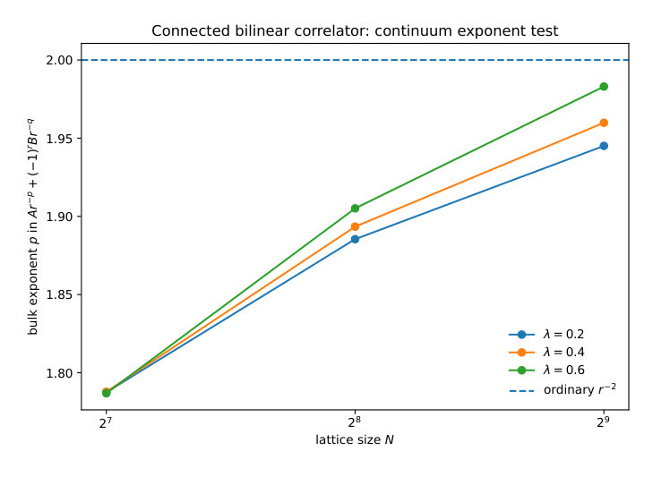
<figcaption class="paper-figure-caption"><b>Fig 4.</b> Figure 4: Vacuum control for the connected bulk bilinear exponent. The fits use the anchored two-component form Ar−p + (−1)rBr−q with j = N/2 and 5 ≤r ≤min(102, N/4). The finite-size drift toward p = 2 is already present at λf = 0; the shutter changes the fitted exponent only weakly.</figcaption>
</figure>
<figure class="paper-figure-card">
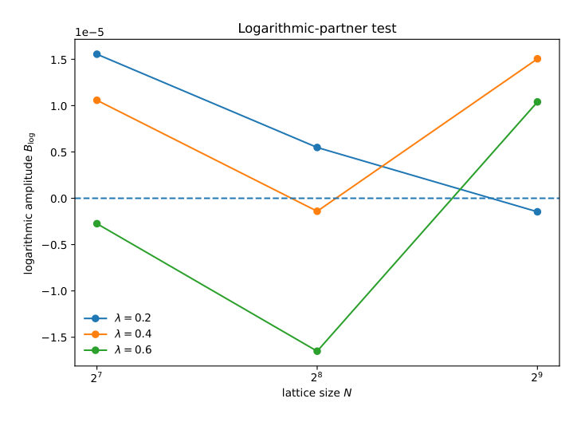
<figcaption class="paper-figure-caption"><b>Fig 5.</b> Figure 5: Direct logarithmic-partner diagnostic using the correct log(r/aUV) ansatz. At N = 512, Blog/A is −8 × 10−8 in the vacuum and 7 × 10−6 at λf = 0.4. The small, regulator-dependent amplitudes do not establish a logarithmic two-point function.</figcaption>
</figure>
</div>

<p><strong>Summary.</strong> This work analyzes the 'infrared memory' left in a fermionic system by a localized, time-varying defect (Majorana shutter). By examining multiple observables—including entanglement entropy and quasiparticle number—the authors demonstrate that the low-frequency physics is governed by distinct coefficients, proving that global and local measures of quantum memory are not mathematically equivalent.</p>
<p><strong>Why it may be interesting.</strong> It provides a rigorous framework for distinguishing between different types of quantum memory effects—global vs. local—in strongly correlated, non-equilibrium fermionic systems, which is crucial for understanding quantum quenches.</p>
<details>
<summary>Detailed structure</summary>
<p><strong>Main problem.</strong> The study investigates the 'infrared memory' imprinted on a quantum system by a local, time-dependent scattering defect modeled as a Majorana shutter.</p>
<p><strong>Main result.</strong> The analysis establishes that global infrared divergences (like in quasiparticle number) and local spatial entropy divergences are controlled by distinct, though related, low-frequency scattering data, showing they are not interchangeable.</p>
<p><strong>Method.</strong> The authors use analytical techniques involving the scattering matrix, Bogoliubov kernels, and lattice simulations to probe the system's response to time-dependent perturbations.</p>
<p><strong>Model / system.</strong> The system is a 1D fermionic chain described by massless Majorana fields, perturbed by a smooth, finite-width coupling acting as the 'Majorana shutter' defect.</p>
<p><strong>Key observables.</strong> Overlap of Gaussian vacua (Anderson orthogonality), post-quench quasiparticle number (logarithmic growth), and entanglement entropy (central-charge description).</p>
<p><strong>Important parameters / regimes.</strong> The finite width ($a$) and the switching time ($ au$) define the memory parameter ($\epsilon_{  ext{mem}} = a/  au$), and the scattering angle ($    heta_\lambda$) controls the zero-frequency scattering matrix.</p>
<p><strong>Assumptions / limitations.</strong> The analysis often relies on the zero-memory approximation ($\epsilon_{	ext{mem}} \ll 1$) and treats the system using continuum field theory methods.</p>
<p><strong>Figures summary.</strong> The notes do not provide a summary of figures, but they detail the quantitative results for various observables like the overlap exponent, the logarithmic coefficient, and the entropy scaling.</p>
<p><strong>Paper structure.</strong> The paper progresses by first establishing the universality of the zero-frequency scattering matrix, then analyzing the time-dependent Bogoliubov kernel, and finally comparing the resulting divergences across global (quasiparticle number) and local (entropy) observables.</p>
</details>
<details>
<summary>Abstract</summary>
<p>We study a finite-width Majorana shutter as a local, time-dependent scattering defect and determine which features of its infrared memory are insensitive to the microscopic spatial profile. For a smooth shutter, the zero-frequency scattering matrix is fixed by the integrated coupling, while finite-width corrections vanish in the long-wavelength limit. A time-dependent switch then produces an infrared Bogoliubov kernel whose singular part is controlled by the change in this scattering matrix.   We examine the many-body response through three observables. The overlap of the pre- and post-shutter Gaussian vacua exhibits Anderson orthogonality, with an exponent set by the scattering angle. A lattice calculation of the post-quench quasiparticle number resolves its logarithmic infrared growth, reaching the predicted coefficient in the slow-switch test and reproducing the expected dependence on the scattering-angle change. When the entanglement cut passes through the shutter, the entropy follows the effective-central-charge description of a conformal defect, with parameter-free agreement at the percent level, improving for the wider shutter. When the shutter lies inside the interval, its contribution remains a subleading finite-size correction. A local bilinear correlator approaches the expected Majorana power law and shows no stable logarithmic amplitude.   These results show that the same low-frequency scattering data control distinct global and spatial observables, while their infrared coefficients are not interchangeable. The remaining limits are also made explicit: the finite-memory correction to the continuum kernel and the controlled continuum limit of large-interval spatial entropy.</p>
</details>
<p><sub><a href="#top">↑ back to top</a></sub></p>

<p><a id="paper-2610.02984"></a></p>
<h3 id="interaction-induced-period-shift-of-the-kohn-oscillation-in-a-parity-time-symmetric-harmonic-trap"><a href="http://arxiv.org/abs/2610.02984v1">Interaction-induced period shift of the Kohn oscillation in a parity-time-symmetric harmonic trap</a></h3>
<p><strong>Authors:</strong> Gaoqing Meng, Mingshu Zhao<br>
<strong>Type:</strong> theory · <strong>Category:</strong> quantum gases · <strong>PDF:</strong> <a href="https://arxiv.org/pdf/2610.02984v1">https://arxiv.org/pdf/2610.02984v1</a><br>
<strong>Analysis basis:</strong> full PDF text, analyzed in chunks
<strong>Topic relevance:</strong> 🔥 <code>driven-dissipative phase transition</code> <strong>4/5</strong> · <code>analog quantum simulation</code> <strong>3/5</strong> · <code>correlated / nonlocal dissipation</code> <strong>3/5</strong> · <code>methods for driven-dissipative</code> <strong>3/5</strong> · <code>non-equilibrium universality</code> <strong>3/5</strong> · <code>Keldysh / 2PI / non-Gaussian methods</code> <strong>2/5</strong> · <code>quantum measurements</code> <strong>1/5</strong></p>
<div class="figure-strip-hint">↔ Scroll figures horizontally</div>
<div class="paper-figures-scroll">
<figure class="paper-figure-card">
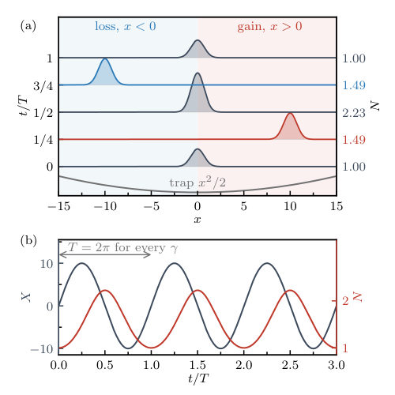
<figcaption class="paper-figure-caption"><b>Fig 1.</b> FIG. 1. The trap and its dynamics in the absence of interac- tions, from Eq. (4) with γ = 0.02 and A = 10 [18]. (a) The density |ψ|2 at five phases of one period, with N on the right. (b) X and N over three periods.</figcaption>
</figure>
<figure class="paper-figure-card">
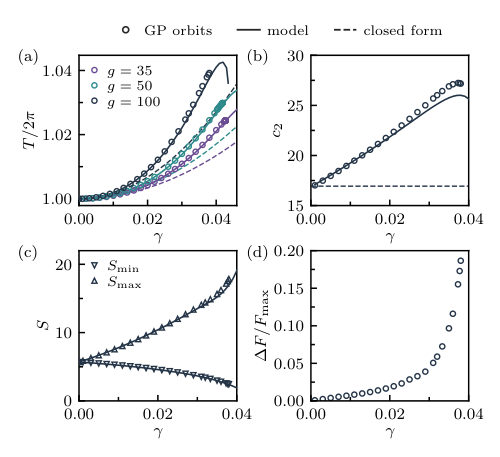
<figcaption class="paper-figure-caption"><b>Fig 2.</b> FIG. 2. The period and the squared width along the orbits for p0 = 10. (a) T for g = 35, 50 and 100. (b)–(d) The g = 100 family: (b) c2; (c) the smallest and largest S along the orbit; (d) the spread ∆F over one period of the density profile F rescaled to unit norm and unit squared width, relative to its peak.</figcaption>
</figure>
<figure class="paper-figure-card">
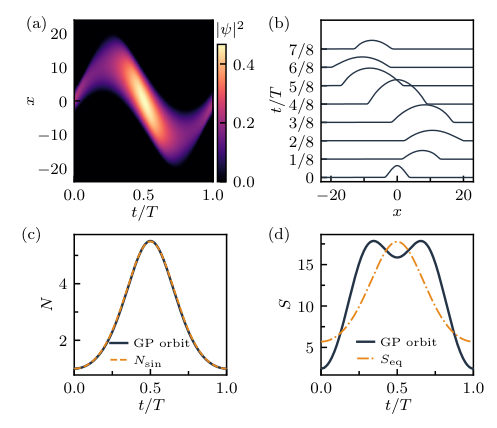
<figcaption class="paper-figure-caption"><b>Fig 3.</b> FIG. 3. The orbit at γ = 0.038 for g = 100, p0 = 10. (a) |ψ|2 over one period and (b) at eight phases, on a common scale. (c) N, with Nsin = exp[(γAT/π)(1 −cos 2πt/T)] for a sinusoidal COM. (d) S, with its equilibrium value Seq at the instantaneous N.</figcaption>
</figure>
<figure class="paper-figure-card">
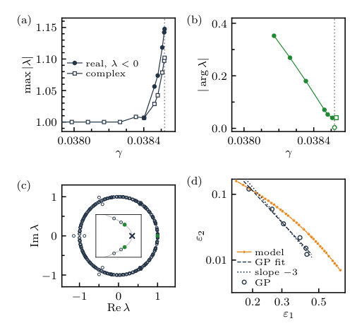
<figcaption class="paper-figure-caption"><b>Fig 4.</b> FIG. 4. The critical gain. (a)–(c) Floquet multipliers λ for g = 100, p0 = 10, with γc dotted in (a) and (b). (a) Largest |λ| among the real negative and among the complex multipliers; |λ| &gt; 1 signals an instability. (b) Phase of the pair that approaches +1, filled below the resonance and open within it, at γc (circle) and on a smaller computational domain, on which the family extends slightly beyond γc (square). (c) The multipliers at γc (open circles), with this pair in green; the inset enlarges |Im λ| &lt; 0.006 near +1, with Re λ stretched by a further factor 400, and a cross marks the four multipliers that stay at +1. (d) The folds of the model and the critical gains of the six GP...</figcaption>
</figure>
<figure class="paper-figure-card">
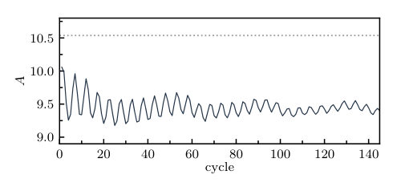
<figcaption class="paper-figure-caption"><b>Fig 5.</b> FIG. 5. Amplitude of successive cycles of the ground state kicked to ˙X(0) = 10 at γ = 0.035 for g = 100, a cycle running from one crossing of the center toward the gain side to the next; the dotted line marks A of the orbit at the same gain.</figcaption>
</figure>
</div>

<p><strong>Summary.</strong> This paper analyzes the period shift of the Kohn oscillation in a Bose-Einstein condensate trapped in a harmonic potential modified by gain and loss (PT-symmetry). The authors show that interactions cause the oscillation period to deviate from the non-interacting value, predicting the shift scales quadratically with gain at small strengths. They use advanced numerical methods to track these periodic orbits up to resonance points.</p>
<p><strong>Why it may be interesting.</strong> This work directly addresses non-Hermitian physics in the context of ultracold atoms, showing how gain/loss terms fundamentally alter coherent dynamics like the Kohn oscillation, which is crucial for understanding open quantum systems in atomic traps.</p>
<details>
<summary>Detailed structure</summary>
<p><strong>Main problem.</strong> The study investigates how interatomic interactions modify the period of the Kohn oscillation in a Bose-Einstein condensate confined in a harmonic trap subjected to a parity-time-symmetric gain-loss potential.</p>
<p><strong>Main result.</strong> The period shift is found to be non-zero and proportional to the square of the gain strength ($\gamma^2$) at small gains, and the analysis determines scaling exponents for the critical gain where resonance occurs.</p>
<p><strong>Method.</strong> The research employs the Gross-Pitaevskii equation, utilizing moment models, Ehrenfest theorems, and advanced numerical techniques like pseudo-arclength continuation to track periodic orbits.</p>
<p><strong>Model / system.</strong> The system is a Bose-Einstein condensate (BEC) governed by a GP equation incorporating a harmonic trap, repulsive interactions ($g|\psi|^2$), and a gain-loss term ($\propto \gamma x$), making the potential PT-symmetric.</p>
<p><strong>Key observables.</strong> Period of oscillation ($T$), cloud width, center of mass position ($X(t)$), and the critical gain ($\gamma_c$) where resonance occurs.</p>
<p><strong>Important parameters / regimes.</strong> Interaction strength ($g$), gain strength ($\gamma$), trap frequency ($\omega$), and the initial ground-state width ($\sigma_0$).</p>
<p><strong>Assumptions / limitations.</strong> The analysis relies on approximations such as fixed profile shape in the moment model, and the use of continuation methods near resonance points.</p>
<p><strong>Figures summary.</strong> Figures illustrate the time evolution of density and COM position for $\gamma=0$, show the period $T$ vs. $\gamma$ confirming quadratic growth, and compare results from different numerical domains/tapering schemes.</p>
<p><strong>Paper structure.</strong> The paper progresses from the linear (non-interacting) case to the interacting case, deriving analytical approximations for small gain, developing moment equations, and finally using advanced numerical continuation techniques to map out the periodic orbits up to critical resonance points.</p>
</details>
<details>
<summary>Abstract</summary>
<p>The center of mass of a Bose--Einstein condensate in a harmonic trap oscillates at the trap frequency independently of the interactions. Without interactions a parity-time-symmetric gain-loss gradient leaves this frequency unchanged, and a cloud of the ground-state width is translated rigidly while the atom number is periodically modulated. With interactions the protection is lost, because the gain and the loss change the number of atoms; the modulated atom number drives the width of the cloud, and the width acts back on the center of mass. At small gain the period grows quadratically with the gain strength, with a coefficient that in the Thomas--Fermi regime is set by the size of the cloud alone. The family of periodic orbits continued from the Kohn oscillation can be followed up to a critical gain, where it comes into resonance with highly excited states of the trap, and over the computed families this critical gain decreases with the amplitude of the oscillation and with the size of the cloud. A five-variable moment model reproduces the period and the width of the cloud along the orbits nearly up to the critical gain.</p>
</details>
<p><sub><a href="#top">↑ back to top</a></sub></p>

<p><a id="paper-2610.03496"></a></p>
<h3 id="opportunistic-full-reconstruction-of-100-dimensional-frequency-bin-quantum-states"><a href="http://arxiv.org/abs/2610.03496v1">Opportunistic full reconstruction of 100-dimensional frequency-bin quantum states</a></h3>
<p><strong>Authors:</strong> Hanson H. Nguyen, Zachary Goisman, Chen-You Su, Diego Maragnano, Marco Liscidini, Jason D. McKinney, Hsuan-Hao Lu, Joseph M. Lukens<br>
<strong>Type:</strong> experiment · <strong>Category:</strong> quantum information and computing · <strong>PDF:</strong> <a href="https://arxiv.org/pdf/2610.03496v1">https://arxiv.org/pdf/2610.03496v1</a><br>
<strong>Analysis basis:</strong> full PDF text, analyzed in chunks
<strong>Topic relevance:</strong> 🔥 <code>quantum optics experiment</code> <strong>4/5</strong> · <code>QC/QI experiment</code> <strong>3/5</strong> · <code>interference shaping light</code> <strong>3/5</strong> · <code>quantum measurements</code> <strong>3/5</strong> · <code>analog quantum simulation</code> <strong>2/5</strong> · <code>methods for driven-dissipative</code> <strong>2/5</strong></p>
<div class="figure-strip-hint">↔ Scroll figures horizontally</div>
<div class="paper-figures-scroll">
<figure class="paper-figure-card">
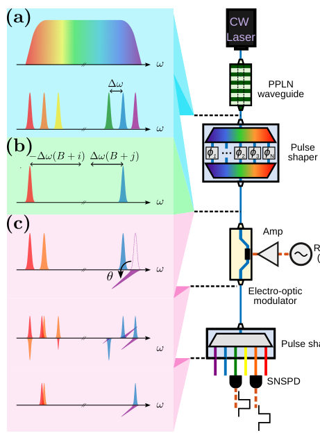
<figcaption class="paper-figure-caption"><b>Fig 1.</b> FIG. 1. Experimental setup illustrating the state-preparation and measurement stages. (a) Generation of a broadband frequency-entangled state via spontaneous parametric down- conversion in a periodically poled lithium niobate waveguide pumped by a 775 nm continuous-wave laser, followed by def- inition of the frequency bins with a Fourier-transform pulse shaper. (b) Measurement of computational-basis correlations to characterize the sparsity and determine the measurements used in threshold quantum state tomography. (c) Measure- ment of targeted off-diagonal coherences through selection of frequency bin pairs (with phase shift θ applied to one bin), frequency mixing using an electro-optic...</figcaption>
</figure>
<figure class="paper-figure-card">
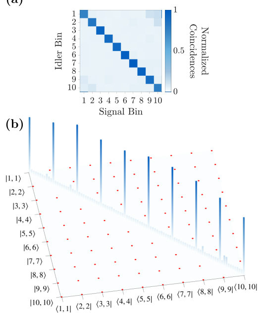
<figcaption class="paper-figure-caption"><b>Fig 2.</b> FIG. 2. Experimental computational-basis measurements. (a) Joint spectral intensity of d = 10 frequency bins per pho- ton, exhibiting a coincidence-to-accidental ratio of 31. (b) Corresponding diagonal density matrix values (blue) and off- diagonal elements identified by thresholding to be measured (red).</figcaption>
</figure>
<figure class="paper-figure-card">
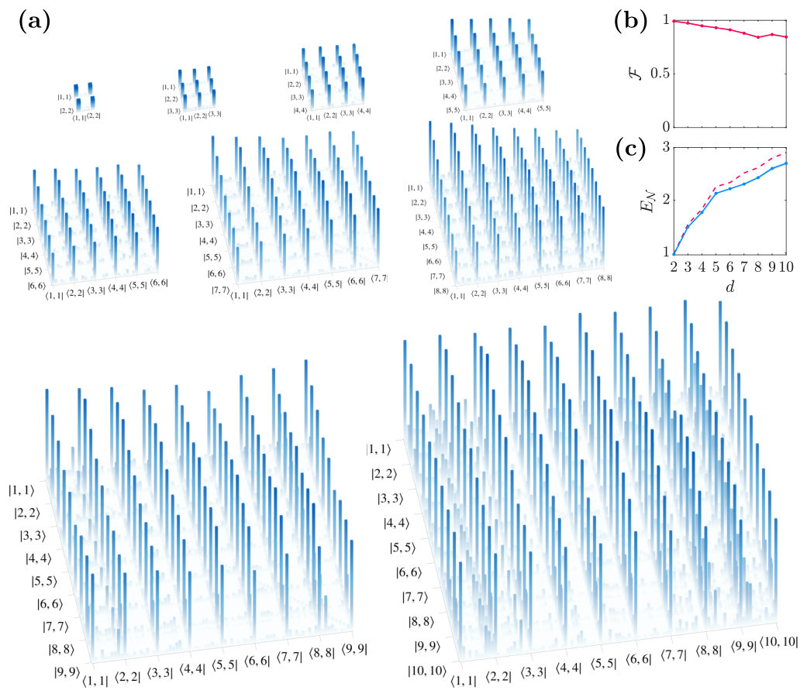
<figcaption class="paper-figure-caption"><b>Fig 3.</b> FIG. 3. Experimental results. (a) Magnitude of Bayesian-estimated two-qudit density matrices with single-qudit dimension d ∈ {2, 3, . . . , 10}. (b) Fidelity with respect to Werner states with λ ∈{0.982, 0.966, 0.883, 0.955, 0.836, 0.815, 0.764, 0.771, 0.747}. (c) Logarithmic negativity EN as a function of d (solid blue), with the dashed red line indicating the values for the hypothesized d-dimensional Werner states. In both (b) and (c), shaded regions included one standard deviation in each direction.</figcaption>
</figure>
<figure class="paper-figure-card">
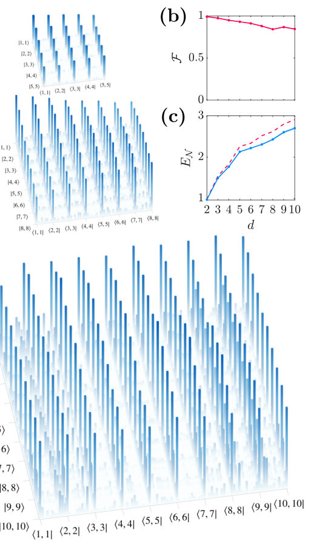
<figcaption class="paper-figure-caption"><b>Fig 4.</b> Figure 4 plots these optimal indices up to k = 49. βk scales linearly with k with near-unit slope, confirming the intuitive relationship βk ∼O(k) noted previously for efficient electro-optic-based frequency-bin tomogra- phy [30], while the stair steps can be attributed to avoid- ance of the zeros of J0(β), which suppress the product J2 0(β)J2 k(β) even when J2 k(β) is large. Plotted along- side these optimal indices are the corresponding max- ima J2 0(βk)J2 k(βk), which unsurprisingly trend downward</figcaption>
</figure>
<figure class="paper-figure-card">
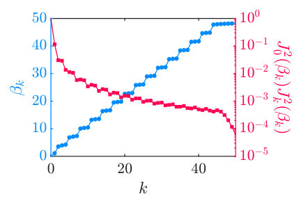
<figcaption class="paper-figure-caption"><b>Fig 5.</b> FIG. 4. Optimal modulation for frequency-bin mixing. The optimal modulation index βk (left axis) and corresponding maximum mixing efficiency J2 0 (βk)J2 k(βk) (right axis) are shown as a function of frequency-bin separation k.</figcaption>
</figure>
</div>

<p><strong>Summary.</strong> This paper introduces Threshold Quantum State Tomography (tQST) to overcome the exponential measurement scaling problem in characterizing high-dimensional quantum states. Using entangled frequency-bin photons, the authors experimentally demonstrated full state reconstruction for 100-dimensional systems while drastically reducing the required measurement overhead. This confirms the viability of measurement-aware techniques for practical, large-scale photonic quantum information processing.</p>
<p><strong>Why it may be interesting.</strong> This work provides a crucial, hardware-efficient tool for characterizing complex, high-dimensional quantum states in photonic systems, which is vital for scaling up quantum communication and computation.</p>
<details>
<summary>Detailed structure</summary>
<p><strong>Main problem.</strong> Characterizing high-dimensional quantum states, specifically frequency-bin encoded qudits, is extremely difficult because conventional Quantum State Tomography (QST) requires exponentially increasing measurement resources with dimensionality.</p>
<p><strong>Main result.</strong> The authors successfully performed full state estimation of entangled biphoton frequency combs up to a 100-dimensional Hilbert space, requiring only 1.9% of the measurements needed by conventional methods.</p>
<p><strong>Method.</strong> They employ Threshold Quantum State Tomography (tQST), an assumption-free measurement protocol combined with Bayesian inference, which selectively targets significant off-diagonal coherences in the density matrix.</p>
<p><strong>Model / system.</strong> The system utilizes photonic quantum information processing via frequency-bin encoding, generating entangled biphoton frequency combs (BFCs) using PPLN waveguides and Fourier-transform pulse shapers.</p>
<p><strong>Key observables.</strong> Fidelity ($F$), Logarithmic Negativity ($E_N$), Joint Spectral Intensity (JSI), and the density matrix elements ($
ho(ij)(k\ell)$).</p>
<p><strong>Important parameters / regimes.</strong> Hilbert space dimension up to $d^2=100$; measurement scaling reduced to $2d^2 - d$ projections.</p>
<p><strong>Assumptions / limitations.</strong> The approach is highlighted as being assumption-free, unlike other accelerated techniques that rely on structural assumptions like low rankness.</p>
<p><strong>Figures summary.</strong> Figure 1 illustrates the full tQST experimental setup. Figure 2 shows the JSI and the resulting density matrix visualization after thresholding. Figure 3 plots the Bayesian-estimated mean fidelity ($\hat{F}$) convergence.</p>
<p><strong>Paper structure.</strong> The paper introduces the challenge of high-dimensional state characterization, details the tQST methodology using adaptive measurements, presents the experimental implementation using photonic sources, and validates the results through fidelity and convergence checks.</p>
</details>
<details>
<summary>Abstract</summary>
<p>Frequency-bin encoding provides a scalable platform for photonic quantum information processing by enabling high-dimensional qudit states compatible with the telecommunications infrastructure. However, characterizing these systems remains challenging, as conventional quantum state tomography requires measurement resources that increase rapidly with dimensionality, compounded by the difficulty of implementing controllable measurements across many frequency modes at once. Here, we address these challenges and demonstrate threshold quantum state tomography of entangled frequency-bin qudits using adaptive measurements that exploit the sparsity of highly entangled biphoton frequency combs. Combined with Bayesian inference, we experimentally demonstrate full state estimation of biphoton frequency combs with Hilbert space dimensions up to $d^2=100$---a 56% increase over the previous record---all while performing a mere 1.9% of the measurements required by conventional tomographically complete approaches. This work confirms the promise of measurement-aware approaches for characterizing high-dimensional photonic quantum systems, unlocking new tools for full tomography that are hardware-efficient, state-aware, and free from a priori assumptions about state structure.</p>
</details>
<p><sub><a href="#top">↑ back to top</a></sub></p>

<p><a id="paper-2610.02644"></a></p>
<h3 id="optimal-state-detection-without-likelihood-estimation"><a href="http://arxiv.org/abs/2610.02644v1">Optimal state detection without likelihood estimation</a></h3>
<p><strong>Authors:</strong> M. D. K. Lee, Z. Chai, J. Z. F. Seng, K. J. Arnold, M. ~D. ~Barrett<br>
<strong>Type:</strong> both · <strong>Category:</strong> other · <strong>PDF:</strong> <a href="https://arxiv.org/pdf/2610.02644v1">https://arxiv.org/pdf/2610.02644v1</a><br>
<strong>Analysis basis:</strong> full PDF text, analyzed in chunks
<strong>Topic relevance:</strong> 🔥 <code>quantum measurements</code> <strong>4/5</strong> · <code>QC/QI experiment</code> <strong>3/5</strong> · <code>quantum optics experiment</code> <strong>3/5</strong> · <code>Full counting statistics</code> <strong>2/5</strong> · <code>driven-dissipative phase transition</code> <strong>2/5</strong> · <code>methods for driven-dissipative</code> <strong>2/5</strong></p>
<div class="figure-strip-hint">↔ Scroll figures horizontally</div>
<div class="paper-figures-scroll">
<figure class="paper-figure-card">
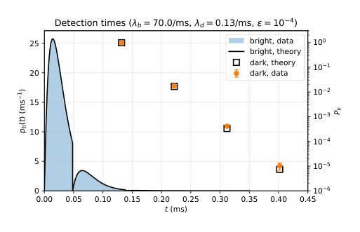
<figcaption class="paper-figure-caption"><b>Fig 1.</b> FIG. 1. Measured detection-time distributions for 138Ba+</figcaption>
</figure>
<figure class="paper-figure-card">
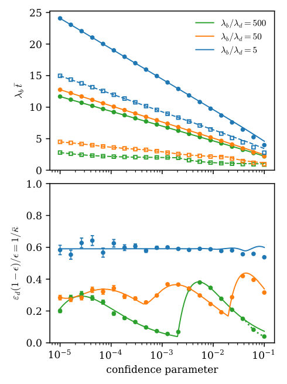
<figcaption class="paper-figure-caption"><b>Fig 2.</b> FIG. 2. Comparison with MC simulation of the full two- boundary algorithm for λb/λd = 5, 50, and 500. (Top) Mean detection times in photon units: circles and solid curves, dark ions; open squares and dashed curves, bright ions. (Bottom) Dark-error suppression εd(1 −ϵb)/ϵb = 1/¯κ: points with bi- nomial error bars, MC; solid curves, Eq. (8), whose arches follow the steps in n0; dotted, 1 −e−λdτ0,b where τ0,b &lt; τ/2 and only a single photon race remains. Agreement is within statistics for ϵ ≲10−2; the resolved deviations at larger ϵ are the second-order corrections neglected in the single-boundary approximation.</figcaption>
</figure>
<figure class="paper-figure-card">
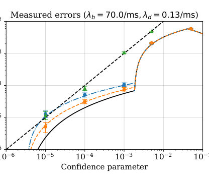
<figcaption class="paper-figure-caption"><b>Fig 3.</b> FIG. 3. Measured error rates versus confidence param- eter ϵ = ϵd = ϵb for 138Ba+ at λb = 70/ms and λd = 0.13/ms. Dark error with the native SPCM dead time (∆= 0, blue circles) and with counts blanked for ∆= 1 µs after each detection (orange squares); curves are Eq. (8) alone (solid; the single-race form 1 −e−λdτ0,d for ϵ &gt; 0.04, where τ0,d &lt; τ/2) and with the afterpulse correction Eq. (13) at the independently measured p = 0.43% (dash-dotted) and 0.17% (dashed). Bright error (green triangles) with Eq. (6), εb = ϵd/(1 −ϵd) (black dashed). Decay events are excluded as described in the text.</figcaption>
</figure>
</div>

<p><strong>Summary.</strong> This paper presents a provably optimal method for quantum state detection in trapped ions by reformulating the complex Bayesian estimation into a simple 'sequential deadline detection' rule. This rule avoids real-time likelihood computation, making it highly suitable for direct implementation on hardware like FPGAs. The method provides closed-form expressions for performance metrics while rigorously accounting for physical imperfections like decay and afterpulsing.</p>
<p><strong>Why it may be interesting.</strong> This work provides a crucial, hardware-implementable optimization for quantum state readout, moving beyond complex likelihood calculations to a simple timing comparison, which is vital for scaling quantum experiments.</p>
<details>
<summary>Detailed structure</summary>
<p><strong>Main problem.</strong> To achieve optimal state detection (distinguishing between two quantum states) without computationally intensive, real-time likelihood estimation.</p>
<p><strong>Main result.</strong> The optimal detection strategy simplifies to a 'sequential deadline detection' rule, which only requires comparing elapsed time against two precomputed arithmetic time sequences.</p>
<p><strong>Method.</strong> The authors derive the decision boundaries from the Bayesian framework, showing they collapse into simple time comparisons, which is implemented using low-level, hardware-friendly logic.</p>
<p><strong>Model / system.</strong> The system involves fluorescence state detection in trapped ions (specifically using Ba+), modeled as a process governed by two Poissonian photon arrival rates (bright and dark).</p>
<p><strong>Key observables.</strong> Mean detection times ($ar{t}_d, ar{t}_b$), error rates ($\epsilon'_b, \epsilon'_d$), and the detection-time distributions.</p>
<p><strong>Important parameters / regimes.</strong> Bright and dark count rates ($\lambda_b, \lambda_d$), and confidence parameters ($\epsilon_d, \epsilon_b$).</p>
<p><strong>Assumptions / limitations.</strong> The analysis relies on single-boundary approximations for error rate derivations, and the full two-boundary algorithm is assumed for optimality claims.</p>
<p><strong>Figures summary.</strong> Figure 1 compares measured and theoretical detection-time distributions for Ba+; Figure 2 compares mean detection times and error suppression using the proposed method against simulations.</p>
<p><strong>Paper structure.</strong> The paper first establishes the limitation of standard methods, derives the simplified sequential deadline detection rule from Bayesian theory, provides closed-form expressions for distributions and mean times, and finally validates the method through simulation and analysis of error corrections (decay, afterpulsing).</p>
</details>
<details>
<summary>Abstract</summary>
<p>We show that adaptive Bayesian estimation in fluorescence state detection reduces to a comparison of elapsed time with two arithmetic time sequences fixed by the bright and dark count rates and confidence parameters $ε_d$ and $ε_b$. No probabilities are computed in real time and the resulting implementation, which we term sequential deadline detection, is provably optimal in mean detection time. The analysis permits closed-form expressions for detection-time distributions, mean detection times, error rates of both channels accounting for miscalibrated rates, decay between the states during detection, and afterpulsing in single photon counting modules. The predictions are validated by Monte Carlo simulation and demonstrated by fluorescence detection with Ba$^+$</p>
</details>
<p><sub><a href="#top">↑ back to top</a></sub></p>

<p><a id="paper-2610.03493"></a></p>
<h3 id="mode-tunable-inter-core-coupling-of-photon-number-resolved-quantum-light-in-a-telecom-multicore-fiber"><a href="http://arxiv.org/abs/2610.03493v1">Mode-tunable inter-core coupling of photon-number-resolved quantum light in a telecom multicore fiber</a></h3>
<p><strong>Authors:</strong> Chiran Wijesundara, Yasmin Sarhan, Henry Strong, Jeffrey Cai, Dan T. Nguyen, Tim Thomay<br>
<strong>Type:</strong> experiment · <strong>Category:</strong> quantum information and computing · <strong>PDF:</strong> <a href="https://arxiv.org/pdf/2610.03493v1">https://arxiv.org/pdf/2610.03493v1</a><br>
<strong>Analysis basis:</strong> full PDF text, analyzed in chunks
<strong>Topic relevance:</strong> 🔥 <code>quantum optics experiment</code> <strong>4/5</strong> · <code>QC/QI experiment</code> <strong>3/5</strong> · <code>analog quantum simulation</code> <strong>3/5</strong> · <code>interference shaping light</code> <strong>3/5</strong> · <code>Full counting statistics</code> <strong>1/5</strong> · <code>quantum measurements</code> <strong>1/5</strong></p>
<div class="figure-strip-hint">↔ Scroll figures horizontally</div>
<div class="paper-figures-scroll">
<figure class="paper-figure-card">
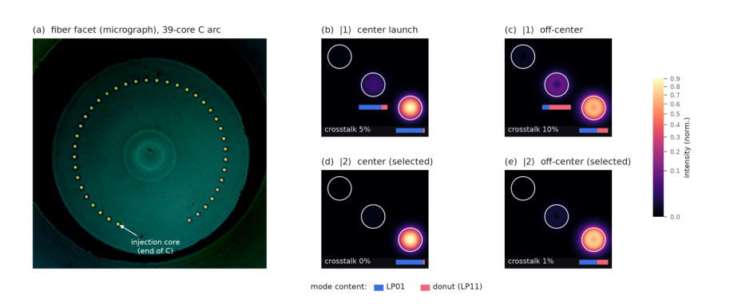
<figcaption class="paper-figure-caption"><b>Fig 1.</b> Fig. 1 | The multicore ring fiber and the coupled-mode model. (a) Micrograph of the facet of the 39-core ring fiber (image courtesy of Corning Incorporated): the gap of several core positions opens the ring into a C-shaped arc and makes the core chain a one-dimensional lattice; light is injected into the marked core at one end of the arc. (b,c) Calibrated coupled-mode model of the output intensity in the launch core and its two detected neighbors for heralded single photons with centered (b) and displaced (c) launch; bars give the modal content (LP01 vs LP11) and the per-photon crosstalk. (d,e) The same for heralded two-photon events when coincidence-based event selection is applied: the...</figcaption>
</figure>
<figure class="paper-figure-card">
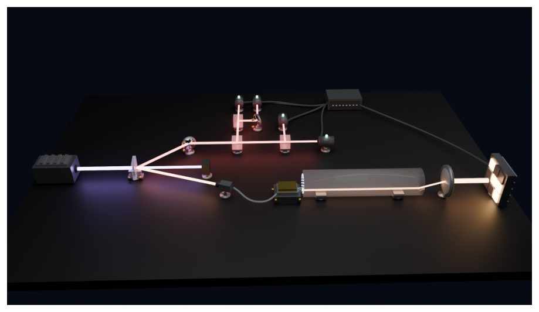
<figcaption class="paper-figure-caption"><b>Fig 2.</b> Fig. 2 | Experimental setup (3D render). A frequency-doubled Ti:Sapphire regenerative amplifier pumps type-II SPDC in BBO. Idler photons pass a monochromator and a fiber-beam- splitter cascade onto four APDs, which together form the photon-number-resolving herald; signal photons are launched by a piezo-positioned single-mode fiber into the end-of-arc core of the multicore fiber, whose output facet is imaged onto the APD array (four read-out pixels). All eight detector channels share one time base. In the core-resolved configuration the pixels SE, C and NW+W collect cores 1, 2 and 3.</figcaption>
</figure>
<figure class="paper-figure-card">
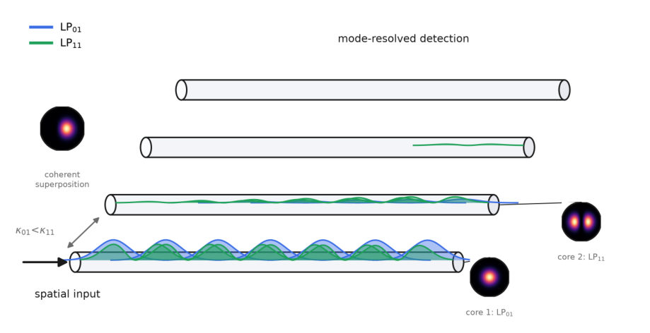
<figcaption class="paper-figure-caption"><b>Fig 3.</b> Fig. 3 | Spatial-mode coupling concept. LP01 (blue) and LP11 (green) amplitudes along neighboring cores of the array: the launched mode content sets the strength of the evanescent inter- core coupling (kappa01 &lt; kappa11), and both the input and the imaged output are mode-resolved. Bump heights follow the calibrated coupled-mode powers over the sample; circular insets show the</figcaption>
</figure>
<figure class="paper-figure-card">
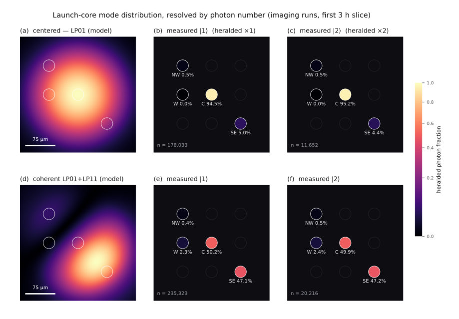
<figcaption class="paper-figure-caption"><b>Fig 4.</b> Fig. 4 | Measured heralded mode distributions. (a) Modelled LP01 intensity for the centered launch; (b,c) measured heralded pixel distributions for the centered launch with photon number</figcaption>
</figure>
<figure class="paper-figure-card">
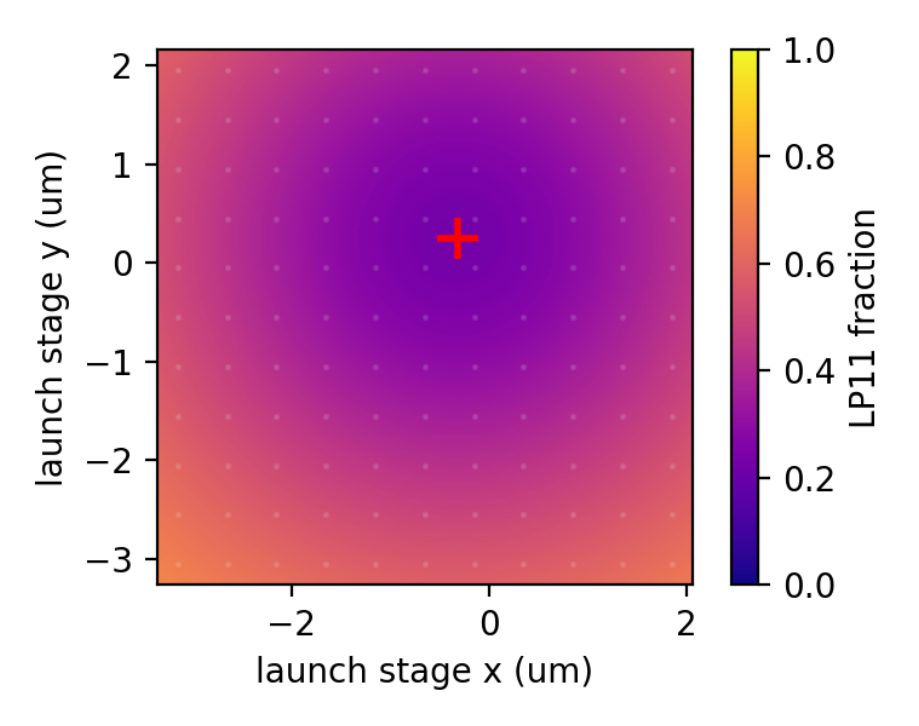
<figcaption class="paper-figure-caption"><b>Fig 5.</b> Fig. 7 | Classical calibration of the launch-state preparation. Fitted LP11 fraction versus launch-stage position for a CW 800 nm scan, decomposed from camera images of the output facet (dots: measurement grid; cross: optimum launch). The fraction is minimal at the optimum, grows radially outward as the launch-overlap model requires, and reaches about 0.4 at the 2.2 um displacement of the heralded runs, reproducing the w11 of the photon-level joint fit (Section 3).</figcaption>
</figure>
</div>

<p><strong>Summary.</strong> The research demonstrates a novel quantum platform using multicore optical fibers to manipulate quantum light by controlling inter-core coupling using the launched spatial mode content. By resolving photon number and spatial modes simultaneously, the authors show that the coupling strength can be tuned without external hardware reconfiguration, establishing a robust, scalable tool for quantum information processing.</p>
<p><strong>Why it may be interesting.</strong> This work provides a highly controllable, solid-state quantum channel where multiple degrees of freedom (core, mode, photon number) can be addressed independently, which is crucial for building scalable quantum networks and quantum simulation architectures.</p>
<details>
<summary>Detailed structure</summary>
<p><strong>Main problem.</strong> To utilize multicore optical fibers as a quantum platform capable of simultaneously encoding and resolving multiple degrees of freedom: core index, intra-core spatial mode, and photon number.</p>
<p><strong>Main result.</strong> The experiment demonstrates that the inter-core coupling can be actively tuned by controlling the launched spatial mode superposition, while maintaining a photon-number independent linear-optics null.</p>
<p><strong>Method.</strong> The authors use heralded photon-number states (|1&gt; and |2&gt;) generated via SPDC and measure the resulting spatial intensity patterns across the multicore fiber.</p>
<p><strong>Model / system.</strong> The platform is a telecom-grade 39-core multicore fiber, where each core supports two LP mode groups ($ ext{LP}<em 11>{01},   ext{LP}</em>$). The system is analyzed using coupled-mode theory to model the coupling between cores and modes.</p>
<p><strong>Key observables.</strong> Intermodal phase preservation, effective inter-core coupling strength (tunable via launch), and the degree of photon-number independence (crosstalk comparison between |1&gt; and |2&gt;).</p>
<p><strong>Important parameters / regimes.</strong> Inter-core coupling range (3.9-13.1%), photon number resolution ($|1
angle, |2
angle$), and the coherence visibility ($V \ge 0.95$).</p>
<p><strong>Assumptions / limitations.</strong> The analysis relies on the assumption that the measured intensity patterns are governed by a coherent superposition of modes, which is validated against exact Fock-space simulations.</p>
<p><strong>Figures summary.</strong> Figures illustrate the 39-core fiber structure, the experimental setup using SPDC and photon-number-resolving heralds, and the spatial-mode coupling concept showing how launch content dictates coupling strength.</p>
<p><strong>Paper structure.</strong> The paper establishes the physical system (MCFs with multiple modes), details the advanced measurement techniques (heralded photon number resolution), and presents the results showing mode-tunable coupling and photon-number independence, culminating in a validation against theoretical simulations.</p>
</details>
<details>
<summary>Abstract</summary>
<p>Multicore optical fibers (MCFs), developed to scale classical telecommunications, are gaining traction as a quantum platform for high-dimensional key distribution, entanglement, and photonic quantum walks. So far, quantum light has occupied these fibers only as single-mode path channels; the spatial-mode structure within each core has remained untouched. Here we operate a telecom-grade 39-core fiber far from its design wavelength, where each core supports exactly two LP mode groups (LP01, LP11), and measure heralded photon-number states |1&gt; and |2&gt;, resolving the photon number simultaneously with the intra-core spatial mode or with the core index. Displacing the launch prepares a coherent LP01-LP11 superposition whose single-sided intensity pattern shows that the intermodal phase is preserved over the fiber: a drift-resolved joint fit gives a pixel asymmetry (0.4% vs 47%) incompatible with an incoherent mode mixture. Because the two modes couple to neighboring cores at different rates (kappa_LP11/kappa_LP01 = 2.4), the launched mode content acts as a state-selectable coupling knob: the effective inter-core coupling of the passive fiber is set by the launch alone (3.9-13.1%), a tunability that otherwise requires electro-optic, thermo-optic, or mechanical reconfiguration. The propagation is photon-number independent: the per-photon crosstalk of heralded |2&gt; states equals that of |1&gt;, bounding any Fock-state dependence to |dx/x| &lt; 6.1% (95% CL), and the imaged mode distributions of |1&gt; and |2&gt; agree to better than 1%. This measured linear-optics null, validated against exact Fock-space simulation, is the baseline against which genuine multiphoton interference in fiber quantum walks must be certified; we also show how coincidence-based event selection produces spurious photon-number-dependent crosstalk if accidentals are not subtracted.</p>
</details>
<p><sub><a href="#top">↑ back to top</a></sub></p>

<p><a id="paper-2610.02854"></a></p>
<h3 id="thermalization-in-a-repeated-interaction-model-with-memory-effects"><a href="http://arxiv.org/abs/2610.02854v1">Thermalization in a repeated-interaction model with memory effects</a></h3>
<p><strong>Authors:</strong> Kanji Nishii, Ryo Nagai, Yoshihiko Abe<br>
<strong>Type:</strong> theory · <strong>Category:</strong> statistical mechanics · <strong>PDF:</strong> <a href="https://arxiv.org/pdf/2610.02854v1">https://arxiv.org/pdf/2610.02854v1</a><br>
<strong>Analysis basis:</strong> full PDF text, analyzed in chunks
<strong>Topic relevance:</strong> 🔥 <code>methods for driven-dissipative</code> <strong>4/5</strong> · <code>quantum measurements</code> <strong>3/5</strong> · <code>scars &amp; prethermalization</code> <strong>3/5</strong> · <code>correlated / nonlocal dissipation</code> <strong>1/5</strong> · <code>driven-dissipative phase transition</code> <strong>1/5</strong> · <code>non-equilibrium universality</code> <strong>1/5</strong></p>
<div class="figure-strip-hint">↔ Scroll figures horizontally</div>
<div class="paper-figures-scroll">
<figure class="paper-figure-card">
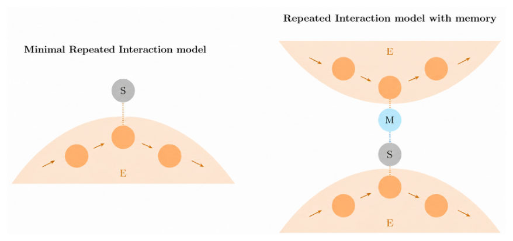
<figcaption class="paper-figure-caption"><b>Fig 1.</b> Figure 1: Left panel: the minimal RI model. The system (S) collides successively with fresh ancillas (E) supplied by a thermal bath, each of which is discarded after the collision. Right panel: the extended model studied in this paper. A memory (M), which collides with S at every step, and a thermal bath of ancillas that thermalizes M are added.</figcaption>
</figure>
<figure class="paper-figure-card">
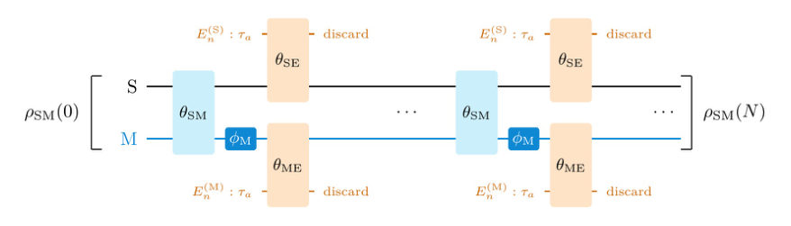
<figcaption class="paper-figure-caption"><b>Fig 2.</b> Figure 2: Schematic of the model. One step consists of a partial swap between S and M (angle θSM), a phase rotation R(M) Z (ϕM) on M, a partial swap between S and a fresh ancilla E(S) n (θSE), and a partial swap between M and a fresh ancilla E(M) n (θME); the ancillas are discarded after each step. N steps map the initial state ρSM(0) to ρSM(N).</figcaption>
</figure>
<figure class="paper-figure-card">
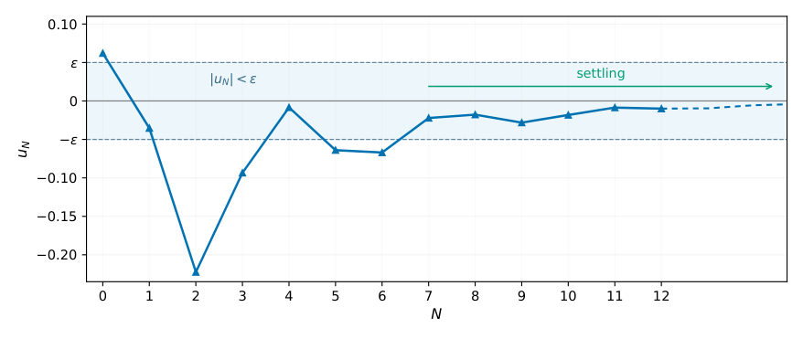
<figcaption class="paper-figure-caption"><b>Fig 3.</b> Figure 3: uN as a function of the number of collisions N for β∆= 0.25, pS(0) = 0.5, pM(0) = 0.3, real c0 = 0.8 √</figcaption>
</figure>
<figure class="paper-figure-card">
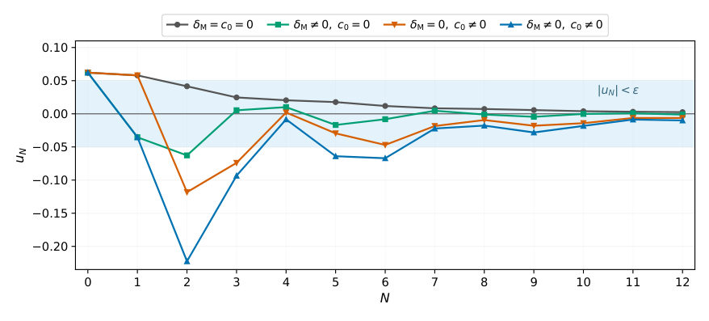
<figcaption class="paper-figure-caption"><b>Fig 4.</b> Figure 4: uN for the four initial conditions listed in the text: all combinations of pM(0) ∈ {0.5, 0.3} (δM = 0 or −0.2) and real c0 ∈{0, c∗} with c∗= 0.8 √</figcaption>
</figure>
<figure class="paper-figure-card">
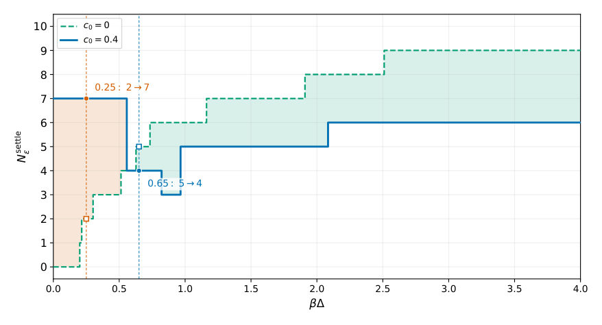
<figcaption class="paper-figure-caption"><b>Fig 5.</b> Figure 5: Number of collisions Nsettle ϵ required to reach the thermal state as a function of the inverse temperature β∆of the target, with and without initial coherence, for pS(0) = pM(0) = 1/2 (δM = 0) and the representative parameter set of Sec. 3.1. Dashed line: c0 = 0; solid line: real c0 = 0.4. The shading indicates where the solid line lies above or below the dashed line. At the marked targets β∆= 0.25 and 0.65, the coherence changes Nsettle ϵ from 2 to 7 and from 5 to 4, respectively. The range shown is 0 ≤β∆≤4.</figcaption>
</figure>
</div>

<p><strong>Summary.</strong> This paper analyzes thermalization in a qubit system using a repeated-interaction model extended with memory effects. The authors derive exact equations showing that memory introduces non-monotonic behavior, including a Mpemba-like reversal, where the time to reach equilibrium depends non-monotonically on the target temperature. This highlights the crucial role of initial correlations in non-equilibrium quantum dynamics.</p>
<p><strong>Why it may be interesting.</strong> This work provides a concrete, analytically tractable model for studying non-equilibrium dynamics, showing how memory in repeated measurements can lead to complex, non-monotonic relaxation behaviors relevant to quantum thermalization.</p>
<details>
<summary>Detailed structure</summary>
<p><strong>Main problem.</strong> The study investigates how memory effects influence the thermalization process of a qubit within a repeated-interaction model.</p>
<p><strong>Main result.</strong> The paper demonstrates that memory effects can lead to non-monotonic thermalization and a Mpemba-like reversal, where the required number of collisions depends non-monotonically on the target temperature.</p>
<p><strong>Method.</strong> The authors derived exact closed evolution equations for the system's populations and coherence, analyzing the time evolution using matrix product representations.</p>
<p><strong>Model / system.</strong> The model involves a system qubit (S) and a memory qubit (M) interacting repeatedly with fresh thermal ancillas in a sequence of partial swaps and phase rotations.</p>
<p><strong>Key observables.</strong> Deviations from the target thermal state ($u_N$), mutual coherence ($c_N$), and the number of collisions required for thermalization ($N_{	ext{settle}}^\epsilon$).</p>
<p><strong>Important parameters / regimes.</strong> Interaction strengths ($    heta_{SE},  heta_{ME},  heta_{SM}$), initial coherence ($c_0$), and initial population imbalance ($\delta_M$).</p>
<p><strong>Assumptions / limitations.</strong> The analysis assumes the coupling strengths satisfy $0 < 	heta_{SE}, 	heta_{ME} < \pi/2$, and the memory effect requires initial coherence or population imbalance.</p>
<p><strong>Figures summary.</strong> Figures compare the minimal RI model (monotonic) to the extended model (non-monotonic), showing oscillations in $u_N$ (Fig. 3) and mapping the reversal effect across parameter space (Figs. 8, 9).</p>
<p><strong>Paper structure.</strong> The paper first establishes the model and derives the evolution equations, then uses the causal-break operation to quantify memory effects, demonstrating non-monotonicity and the Mpemba-like reversal by analyzing the dependence of the settling time on temperature and initial conditions.</p>
</details>
<details>
<summary>Abstract</summary>
<p>We study how memory affects the thermalization of a qubit in a repeated-interaction model. In our model, a memory qubit interacts repeatedly with the system, while both qubits undergo collisions with fresh thermal ancillas. We derive exact closed evolution equations for their populations and mutual coherence, and demonstrate memory effects using a causal-break operation. Although the system converges to the target thermal state, the thermalization behavior shows non-monotonic approach. We also find a Mpemba-like reversal, in which the number of collisions required for thermalization depends non-monotonically on the temperature of the target state. Within the initial-state family considered, both phenomena require initial coherence between the system and memory or an imbalance in their excited-state populations.</p>
</details>
<p><sub><a href="#top">↑ back to top</a></sub></p>

<p><a id="paper-2610.02314"></a></p>
<h3 id="gap-protected-heisenberg-limited-squeezing-with-locally-interacting-multi-level-spins"><a href="http://arxiv.org/abs/2610.02314v1">Gap-Protected Heisenberg-Limited Squeezing with Locally Interacting Multi-Level Spins</a></h3>
<p><strong>Authors:</strong> Sakshi Bahamnia, Sagar Chaudhary, Arman Duha, Thomas Bilitewski<br>
<strong>Type:</strong> theory · <strong>Category:</strong> other · <strong>PDF:</strong> <a href="https://arxiv.org/pdf/2610.02314v1">https://arxiv.org/pdf/2610.02314v1</a><br>
<strong>Analysis basis:</strong> full PDF text, analyzed in chunks
<strong>Topic relevance:</strong> 🔥 <code>analog quantum simulation</code> <strong>4/5</strong> · <code>Rydberg arrays</code> <strong>3/5</strong> · <code>Keldysh / 2PI / non-Gaussian methods</code> <strong>2/5</strong> · <code>methods for driven-dissipative</code> <strong>2/5</strong></p>
<div class="figure-strip-hint">↔ Scroll figures horizontally</div>
<div class="paper-figures-scroll">
<figure class="paper-figure-card">
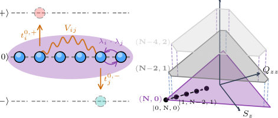
<figcaption class="paper-figure-caption"><b>Fig 1.</b> FIG. 1. Model and gap protection. (a) Power-law interacting spin-1 particles undergo pair creation |0, 0⟩→|+1, −1⟩, which generates entanglement; the local su(3) exchange Vij ˆλi · ˆλj protects the collective dynamics. (b) Hilbert-space sectors la- beled by SU(3) irreducible representations (p, q) and separated by gaps of the quadratic Casimir ˆΛ · ˆΛ. In the collective sec- tor (N, 0), states are labeled by occupations |N−1, N0, N+1⟩; arrows indicate the states coupled by pair creation.</figcaption>
</figure>
<figure class="paper-figure-card">
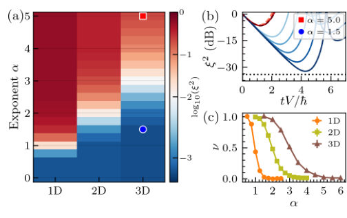
<figcaption class="paper-figure-caption"><b>Fig 2.</b> FIG. 2. Phases of squeezing dynamics without gap protection (χ = 0). (a) Minimal squeezing ξ2 min (color scale) as a function of dimension d and power-law exponent α, showing the collec- tive regime (blue, ξ2 opt ∼1/N) and the non-collective regime (ξ2 min ∼N −ν, ν &lt; 1), for L1D = 104, L2D = 100, L3D = 22. (b) Time evolution of ξ2 opt in 3D for a characteristic α in the collective regime (blue, α = 1.5) and in the non-collective regime (red, α = 5.0), for L3D = 5, 7, 10, 15, 22 from faint to dark. (c) Extracted scaling exponent ν of ξ2 min ∝N −ν versus α for 1D, 2D and 3D (error bars smaller than symbol size).</figcaption>
</figure>
<figure class="paper-figure-card">
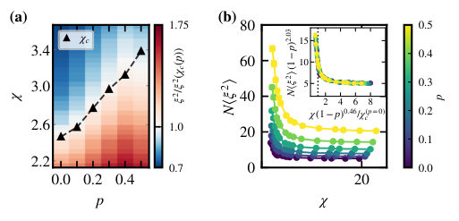
<figcaption class="paper-figure-caption"><b>Fig 3.</b> FIG. 4. Robustness to site-dilution disorder. (a) Minimal squeezing ξ2 min as a function of site dilution p and gap pro- tection strength χ in 3D for L = 10 (N = 1000) for dipolar interactions (α = 3). (b) Minimal squeezing Nξ2 min versus gap protection strength χ for different p (colorbar). Inset: Scaling collapse of minimal squeezing.</figcaption>
</figure>
<figure class="paper-figure-card">
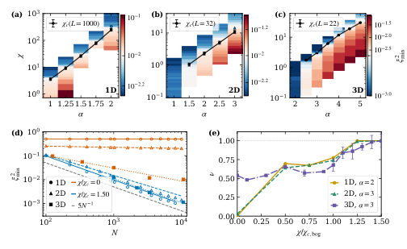
<figcaption class="paper-figure-caption"><b>Fig 4.</b> FIG. 3. Gap-protected squeezing phase diagrams. (a-c) Mini- mal squeezing as a function of α and gap protection strength χ in 1D (L = 1000) (a), 2D (L = 32) (b) and 3D (L = 10) (c). (d) Scaling of minimal squeezing versus system size N for parameters below and above the transition with markers as indicated in the panels (a)-(c). (e) Scaling exponent of minimal squeezing ξ2 min ∝N −ν versus gap protection strength χ normalised by the Bogoliubov prediction χc,bog. The collec- tive phase is defined by ν reaching 1.</figcaption>
</figure>
</div>

<p><strong>Summary.</strong> This work develops a general mechanism to achieve Heisenberg-limited spin squeezing in multi-level spin systems with local interactions. By introducing a specific local exchange interaction, the authors create an energy gap that suppresses detrimental non-collective excitations. This restores optimal entanglement scaling, offering a practical pathway for quantum sensing using arrays of multi-level atoms or molecules.</p>
<p><strong>Why it may be interesting.</strong> It provides a concrete, tunable mechanism (the gap-protection term) to overcome fundamental limitations (loss of scaling due to locality) in generating high-quality entanglement in platforms like Rydberg or molecular arrays.</p>
<details>
<summary>Detailed structure</summary>
<p><strong>Main problem.</strong> The paper addresses the challenge of generating scalable, metrologically useful entanglement (spin squeezing) in multi-level spin systems when interactions are short-ranged.</p>
<p><strong>Main result.</strong> Introducing a local $\mathfrak{su}(D)$ exchange interaction establishes an energy gap that protects the collective manifold, thereby restoring Heisenberg scaling ($\xi^2 \propto 1/N$) for any power-law interaction range.</p>
<p><strong>Method.</strong> The analysis combines analytical techniques, such as Bogoliubov theory applied to the excitation spectrum, with numerical simulations using the generalized discrete truncated Wigner approximation (GDTWA).</p>
<p><strong>Model / system.</strong> The system is a $d$-dimensional array of $N$ multi-level (qudit) spins with power-law interactions, modeled by a Hamiltonian that includes a gap-protection term.</p>
<p><strong>Key observables.</strong> Spin squeezing parameter ($\xi^2_{	ext{opt}}$), Heisenberg scaling exponent ($
u$), and the critical gap-protection strength ($\chi_c$).</p>
<p><strong>Important parameters / regimes.</strong> Interaction exponent ($\alpha$), spatial dimension ($d$), system size ($N$), and the gap-protection strength ($\chi$).</p>
<p><strong>Assumptions / limitations.</strong> The Bogoliubov analysis is assumed valid when excitation density is low; the GDTWA is an approximation method.</p>
<p><strong>Figures summary.</strong> Figures illustrate the transition from non-scalable to Heisenberg-limited squeezing as gap protection is added, show time evolution of squeezing, and map out phase diagrams based on interaction range and disorder.</p>
<p><strong>Paper structure.</strong> The paper first establishes the problem of squeezing loss with local interactions, then introduces the gap-protection mechanism, analyzes the scaling laws analytically via Bogoliubov theory, and finally validates these findings through extensive numerical simulations across various dimensions and disorder levels.</p>
</details>
<details>
<summary>Abstract</summary>
<p>We demonstrate a general mechanism to generate scalable, metrologically useful entanglement in the form of generalized spin squeezing in multi-level (qudit) spin systems with power-law interactions. We demonstrate this for spin-changing dynamics, extending the physics of spin-nematic squeezing known from spinor BECs to spatially extended lattice geometries. In the absence of all-to-all connectivity, the dynamics generally suffers from leakage into non-collective finite-momentum modes, destroying Heisenberg scaling. We show that introducing local $\mathfrak{su}(D)$ exchange interactions establishes an energy gap that protects the fully symmetric collective manifold, suppressing non-collective excitations, and achieving Heisenberg scaling $ξ^2\propto1/N$ in one to three dimensions for any power-law exponent. We provide an analytical understanding of the mechanism via the analysis of the Bogoliubov excitation spectrum, and demonstrate its effectiveness via numerical simulations of the quantum many-body dynamics. Our findings more broadly apply to other spin-squeezing Hamiltonians, and directly generalize to larger internal spin dimensions. Our results provide a practical pathway towards scalable Heisenberg-limited qudit entanglement generation in experimental platforms such as arrays of (polar) molecules, magnetic atoms, and Rydberg atoms realizing multi-level spin systems.</p>
</details>
<p><sub><a href="#top">↑ back to top</a></sub></p>

<p><a id="paper-2610.03257"></a></p>
<h3 id="pulse-resolved-post-generation-phase-control-of-squeezed-light-at-93-mhz-with-a-bulk-lithium-niobate-modulator"><a href="http://arxiv.org/abs/2610.03257v1">Pulse-resolved post-generation phase control of squeezed light at 93 MHz with a bulk lithium-niobate modulator</a></h3>
<p><strong>Authors:</strong> Edoardo Suerra, Igor Vasiljevic, Sebastiano Corli, Enrico Prati, Simone Cialdi<br>
<strong>Type:</strong> experiment · <strong>Category:</strong> quantum information and computing · <strong>PDF:</strong> <a href="https://arxiv.org/pdf/2610.03257v1">https://arxiv.org/pdf/2610.03257v1</a><br>
<strong>Analysis basis:</strong> full PDF text, analyzed in chunks
<strong>Topic relevance:</strong> 🔥 <code>quantum optics experiment</code> <strong>4/5</strong> · <code>QC/QI experiment</code> <strong>3/5</strong> · <code>interference shaping light</code> <strong>1/5</strong> · <code>quantum measurements</code> <strong>1/5</strong></p>
<div class="figure-strip-hint">↔ Scroll figures horizontally</div>
<div class="paper-figures-scroll">
<figure class="paper-figure-card">
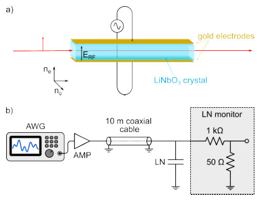
<figcaption class="paper-figure-caption"><b>Fig 1.</b> Figure 1. Electro-optic phase modulator and electrical driv- ing circuit. (a) Geometry of the bulk lithium-niobate crystal. Gold electrodes deposited on opposite surfaces generate an RF electric field, ERF, oriented along the extraordinary crys- tallographic axis. The optical field propagates orthogonally to ERF and is polarized along the extraordinary direction. (b) Electrical circuit used to drive and monitor the crystal. The waveform generated by the arbitrary waveform generator (AWG) is amplified and transmitted to the crystal through a 10 m coaxial cable. A resistive voltage divider connected at the crystal input provides a monitor of the applied electrical waveform.</figcaption>
</figure>
<figure class="paper-figure-card">
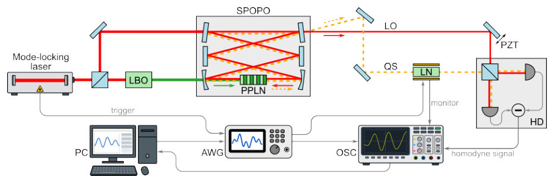
<figcaption class="paper-figure-caption"><b>Fig 2.</b> Figure 2. Experimental platform for pulse-resolved phase control of squeezed-vacuum states. A mode-locked laser operating at 1035 nm and 93 MHz provides the common optical and timing reference. A fraction of the laser output is frequency doubled in a lithium triborate (LBO) crystal and pumps the periodically poled lithium-niobate (PPLN) crystal inside the synchronously pumped optical parametric oscillator (SPOPO). The SPOPO generates a train of squeezed-vacuum pulses, denoted by QS. The state is transmitted through the bulk lithium-niobate phase modulator (LN) after its generation and is subsequently measured with a time-resolved balanced homodyne detector (HD). The local oscillator (LO) is...</figcaption>
</figure>
<figure class="paper-figure-card">
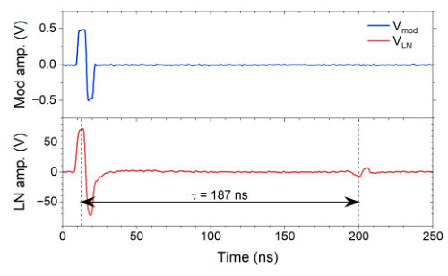
<figcaption class="paper-figure-caption"><b>Fig 3.</b> Figure 3. Electrical response of the bulk lithium-niobate phase modulator. The upper trace (blue) shows an example of a single modulation pulse generated by the AWG, while the lower trace (red) shows the corresponding voltage measured at the crystal input after RF amplification and propagation through the 10 m coaxial cable. A delayed reflected transient is observed at τ = 187 ns.</figcaption>
</figure>
<figure class="paper-figure-card">
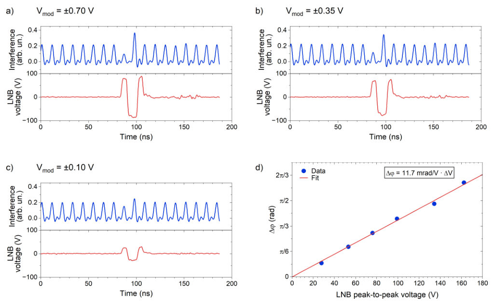
<figcaption class="paper-figure-caption"><b>Fig 4.</b> Figure 4. Interferometric calibration of the phase shift introduced by the lithium-niobate modulator. Panels (a)–(c) show representative electrical modulation pulses (red) and the corresponding optical interference signals (blue) for three different modulation amplitudes. The programmed AWG voltages are ±0.70 V, ±0.35 V, and ±0.10 V, respectively. Panel (d) reports the measured differential phase shift as a function of the voltage actually applied to the crystal. The solid line is a linear fit to the experimental data.</figcaption>
</figure>
<figure class="paper-figure-card">
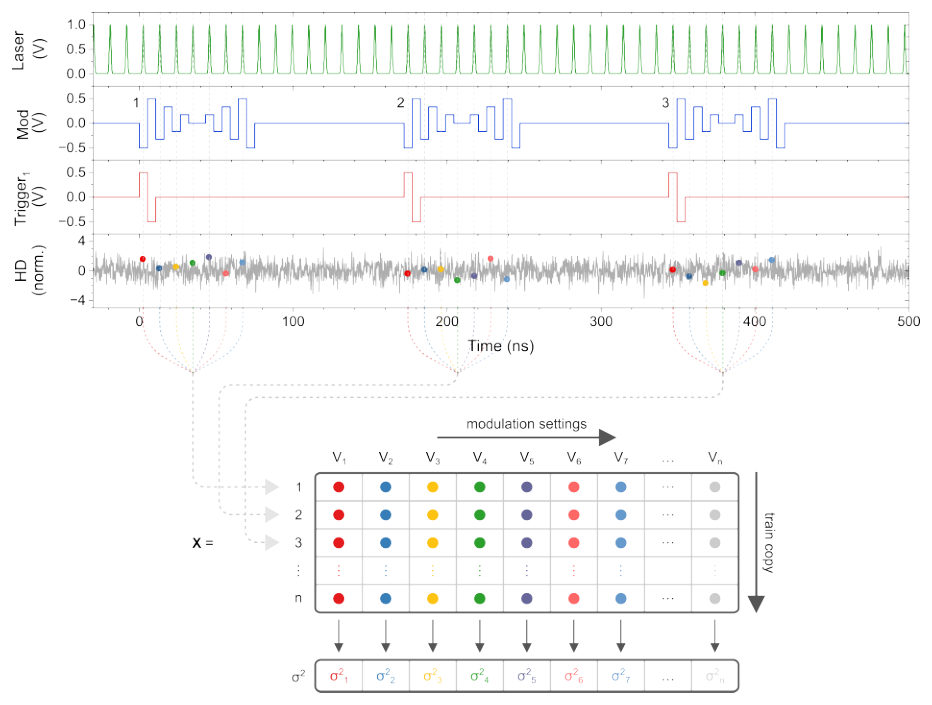
<figcaption class="paper-figure-caption"><b>Fig 5.</b> Figure 5. Pulse-resolved modulation and data-acquisition scheme. The optical pulse train, the electrical modulation waveform, and the synchronization signals are shown together with the corresponding organization of the acquired homodyne data. Each modulation pulse is associated with one temporal optical mode. The schematic example shows 7 phase settings for clarity, while the experimental sequence contains 15 consecutive temporal modes. The same sequence of phase settings is repeated N = 2000 times, allowing the homodyne samples corresponding to each phase setting to be collected over repeated measurements.</figcaption>
</figure>
</div>

<p><strong>Summary.</strong> This experiment demonstrates pulse-resolved phase control over squeezed-vacuum states using a bulk lithium-niobate electro-optic modulator operating at 93 MHz. By independently controlling the phase of successive optical pulses, the authors validate a key component for scalable, time-domain quantum information processing architectures. This technique allows for programmable manipulation of quantum resources in recirculating optical systems.</p>
<p><strong>Why it may be interesting.</strong> This work provides a robust, high-repetition-rate electro-optic building block for programmable manipulation of time-multiplexed quantum states, directly advancing the hardware realization of continuous-variable quantum computation.</p>
<details>
<summary>Detailed structure</summary>
<p><strong>Main problem.</strong> The paper aims to demonstrate the ability to perform phase control on individual temporal modes of squeezed light, which is crucial for scalable photonic quantum information processing.</p>
<p><strong>Main result.</strong> The authors successfully demonstrated pulse-resolved phase control of squeezed-vacuum states at a high repetition rate of 93 MHz, confirming the feasibility of post-generation quantum state manipulation.</p>
<p><strong>Method.</strong> They used a low-loss bulk lithium-niobate electro-optic modulator driven by a broadband RF amplifier to apply phase shifts pulse-by-pulse, followed by time-resolved balanced homodyne detection.</p>
<p><strong>Model / system.</strong> The system involves a synchronously pumped optical parametric oscillator generating squeezed-vacuum states at 1035 nm, which are then passed through the electro-optic modulator. The modulator's phase shift is controlled by an external, programmable electrical waveform.</p>
<p><strong>Key observables.</strong> The phase-dependent quadrature variance ($\sigma_j^2$) of the squeezed state, measured via time-resolved balanced homodyne detection.</p>
<p><strong>Important parameters / regimes.</strong> Repetition rate of 93 MHz; maximum differential phase excursion of 1.93 rad; detection efficiency ($\eta$) of 40%.</p>
<p><strong>Assumptions / limitations.</strong> The measurement relies on comparing the modulator-controlled scan against a reference scan achieved by varying the local-oscillator phase with a piezoelectric actuator.</p>
<p><strong>Figures summary.</strong> Figures illustrate the electro-optic modulator geometry and driving circuit, the overall experimental setup, and comparisons between the programmed phase modulation results and the PZT-scanned reference quadrature variance.</p>
<p><strong>Paper structure.</strong> The paper establishes the need for time-domain multiplexing in QIP, details the use of the LiNbO$_3$ modulator driven by RF electronics, describes the time-resolved measurement protocol, and concludes by comparing the results to a known reference measurement.</p>
</details>
<details>
<summary>Abstract</summary>
<p>Time-domain multiplexing of continuous-variable quantum states provides a scalable approach to photonic quantum information processing, in which individual temporal modes can be sequentially manipulated within a common optical path. Here we demonstrate pulse-resolved post-generation phase control of squeezed-vacuum states at a repetition rate of 93 MHz using a low-loss bulk lithium-niobate electro-optic modulator driven by a broadband RF power amplifier. The driving architecture exploits low-cost, commercially available RF components and the impedance mismatch between the RF chain and the capacitive crystal load, rather than relying on dedicated custom high-voltage electronics, to obtain large voltage excursions on the modulator while operating above the piezoelectric-resonance region of lithium niobate. The modulator is driven synchronously with the optical pulse train, enabling the phase of consecutive temporal modes to be individually controlled. An interferometric calibration yields a maximum differential phase excursion of 1.93 rad. We apply the modulator to a 1035 nm squeezed-vacuum field generated by a synchronously pumped optical parametric oscillator and characterize the output using time-resolved balanced homodyne detection. With the local-oscillator phase kept fixed, the phase of the squeezed state is varied from pulse to pulse, and the corresponding phase-dependent quadrature variance is reconstructed. The resulting quadrature scan agrees with an equivalent measurement obtained by varying the local-oscillator phase with a piezoelectric actuator. These results demonstrate post-generation quantum-state phase control at the individual-pulse level and provide an electro-optic building block for programmable manipulation of time-multiplexed quantum states in recirculating optical architectures.</p>
</details>
<p><sub><a href="#top">↑ back to top</a></sub></p>

<p><a id="paper-2610.03351"></a></p>
<h3 id="quantum-key-distribution-with-entanglement-swapped-photons-from-a-quantum-emitter"><a href="http://arxiv.org/abs/2610.03351v1">Quantum Key Distribution with Entanglement-Swapped Photons from a Quantum Emitter</a></h3>
<p><strong>Authors:</strong> Michele B. Rota, Francesco Basso Basset, Alessandro Laneve, Francesco Salusti, Nicolas Claro-Rodriguez, Giuseppe Ronco, Mattia Beccaceci, Tobias M. Krieger, Quirin Buchinger, Saimon F. Covre da Silva, Sandra Stroj, Mariia Gumberidze, Vladyslav Usenko, Sven Höfling, Tobias Huber-Loyola, Mario A. Usuga Castaneda, Armando Rastelli, Klaus D. Jöns, Rinaldo Trotta<br>
<strong>Type:</strong> experiment · <strong>Category:</strong> quantum information and computing · <strong>PDF:</strong> <a href="https://arxiv.org/pdf/2610.03351v1">https://arxiv.org/pdf/2610.03351v1</a><br>
<strong>Analysis basis:</strong> full PDF text, analyzed in chunks
<strong>Topic relevance:</strong> 🔥 <code>quantum optics experiment</code> <strong>4/5</strong> · <code>QC/QI experiment</code> <strong>3/5</strong> · <code>interference shaping light</code> <strong>1/5</strong> · <code>quantum measurements</code> <strong>1/5</strong></p>
<div class="figure-strip-hint">↔ Scroll figures horizontally</div>
<div class="paper-figures-scroll">
<figure class="paper-figure-card">
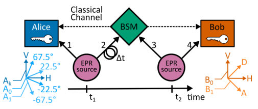
<figcaption class="paper-figure-caption"><b>Fig 1.</b> FIG. 1: Protocol scheme for quantum key distri- bution with swapped photons using a single en- tangled photon pair source. A single EPR source is excited at two consecutive times t1 and t2, emitting each time a pair of entangled photons, labeled (1,2) and (3,4). Two of these entangled photons (2 and 3) interfere in a 50% efficiency Bell state measurement (BSM) setup by delaying the earlier photon via a delay line. The result of the BSM is shared among Alice and Bob with the pair of now mutually entangled photons 1 and 4. Using the information of the BSM, Alice and Bob perform mea- surements using different sets of bases, Ak, A0, and A1 for Alice and B0 and B1 for Bob. Sharing the choice of...</figcaption>
</figure>
<figure class="paper-figure-card">
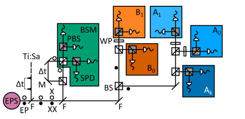
<figcaption class="paper-figure-caption"><b>Fig 2.</b> FIG. 3: Scheme of the QKD experimental setup. The entangled pair source (EPS) is excited by a pulsed Ti:Sapphire laser (Ti:Sa), doubled in repetition rate by an unbalanced Mach-Zehnder interferometer with a time delay ∆t. The emitted pairs of photons, hollow (X pho- tons) and full (XX photons) circles, are separated em- ploying spectral filters (F) and sent respectively to the Bell state measurement (BSM) setup and Alice and Bob. In the BSM, the state of the photons from subsequent pulses is projected into two possible Bell states by mak- ing them interfere in another unbalanced Mach-Zehnder interferometer with the same ∆t and measuring coinci- dence combinations at 4 single photon...</figcaption>
</figure>
<figure class="paper-figure-card">
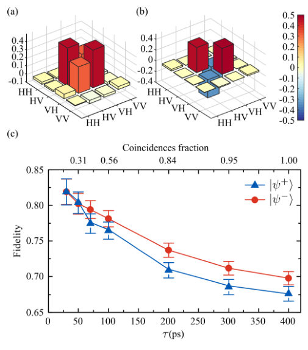
<figcaption class="paper-figure-caption"><b>Fig 3.</b> FIG. 2: Experimental entanglement swapping performance. (a) Real part of the density matrix of the biexciton photons given a |ψ+⟩BSM measured with a 30ps time window on the BSM. (b) Same as in (a) for a |ψ−⟩BSM. (c) Fidelity of the biexciton photons state to the expected state as a function of the coincidence time window applied to the BSM events. The retained frac- tion of coincidence counts for different time windows is reported on the top axis. The total 4-fold coincidences corresponding to the largest coincidence window, i.e., 400 ps, are 22 958 , corresponding to a coincidence rate of 6.4 s−1.</figcaption>
</figure>
<figure class="paper-figure-card">
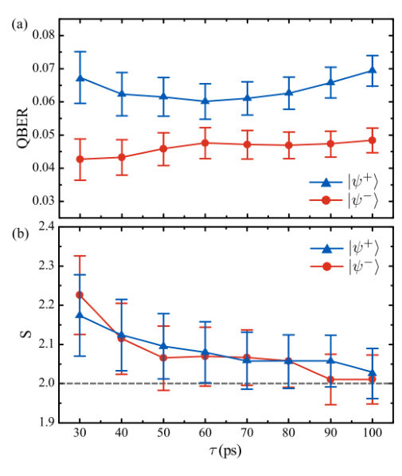
<figcaption class="paper-figure-caption"><b>Fig 4.</b> FIG. 4: QKD performance as a function of BSM coincidence time window. (a) QBER as a function of the BSM coincidence time window. (b) Bell parameter S as a function of the BSM coincidence time window. The threshold S = 2 for classical correlation is highlighted by a dashed grey line.</figcaption>
</figure>
</div>

<p><strong>Summary.</strong> This paper demonstrates a crucial step toward long-distance quantum communication by implementing a quantum repeater protocol using entanglement-swapped photons. They utilize a deterministic photon source based on a GaAs quantum dot embedded in a photonic cavity. The experiment successfully shows that secure key distribution can be achieved by carefully controlling the temporal post-selection during the entanglement swapping process.</p>
<p><strong>Why it may be interesting.</strong> This work directly addresses the physical realization of quantum networks by integrating solid-state quantum emitters (QDs) into a functional quantum repeater architecture for QKD, which is highly relevant to quantum optics and open quantum systems research.</p>
<details>
<summary>Detailed structure</summary>
<p><strong>Main problem.</strong> The primary goal is to extend the range of Quantum Key Distribution (QKD) by implementing an elementary quantum repeater scheme using entanglement-swapped photons.</p>
<p><strong>Main result.</strong> The authors successfully demonstrated secure key exchange using entanglement-swapped photons generated from a quantum dot source, achieving a maximum positive asymptotic secure key fraction (SKF) of 9.8% under optimized temporal post-selection.</p>
<p><strong>Method.</strong> The protocol involves generating two pairs of entangled photons, performing a Bell State Measurement (BSM) on the intermediate photons, and then using the remaining photons for an entanglement-based QKD protocol (asymmetrical Ekert variation).</p>
<p><strong>Model / system.</strong> The system utilizes a state-of-the-art deterministic photon source: a strain-tuned GaAs quantum dot embedded in a photonic cavity and integrated on a piezoelectric substrate. This source generates strongly polarization-entangled photon pairs via the biexciton-exciton cascade.</p>
<p><strong>Key observables.</strong> Fidelity of the emitted state (0.94(1)), HOM visibility (improved to 0.79(2)), Quantum Bit Error Rate (QBER), Bell parameter (S), and the Secure Key Fraction (SKF).</p>
<p><strong>Important parameters / regimes.</strong> The performance is highly dependent on the BSM coincidence temporal window, with optimal results found at short time delays (e.g., 30 ps).</p>
<p><strong>Assumptions / limitations.</strong> The security analysis assumes Alice and Bob control their measuring apparatuses, and the protocol relies on temporal post-selection rather than entanglement distillation.</p>
<p><strong>Figures summary.</strong> Figures illustrate the protocol scheme involving entanglement swapping (Fig. 1), the entanglement swapping performance vs. BSM coincidence time window (Fig. 2), and the QKD setup detailing source, BSM, and measurement stations (Fig. 3).</p>
<p><strong>Paper structure.</strong> The paper details the theoretical framework for quantum repeaters, describes the experimental setup using QD sources, presents measurements of entanglement swapping fidelity and QKD parameters (QBER, S) as a function of the BSM coincidence window, and concludes with the calculation of the secure key rate.</p>
</details>
<details>
<summary>Abstract</summary>
<p>Quantum key distribution (QKD) is a fundamental functionality of quantum networks. Extending its range requires quantum repeaters, a technology still under development and not yet demonstrated in combination with quantum cryptographic protocols. Here, we address the elementary operation of a viable quantum repeater scheme by evaluating whether correlated photons distributed via entanglement swapping can support secret key distribution. We employ a state-of-the-art deterministic photon source based on a strain-tuned GaAs quantum dot embedded in a photonic cavity and implement a source-independent QKD protocol between two nodes using entanglement-swapped photons. We benchmark the system and present how high-resolution temporal post-selection can enable secure key exchange, with further rate improvements expected through realistic device and protocol optimizations. Due to its compatibility with a wide range of quantum memory platforms, our approach represents a significant step towards long-distance quantum-safe communication.</p>
</details>
<p><sub><a href="#top">↑ back to top</a></sub></p>

<p><a id="paper-2610.03671"></a></p>
<h3 id="quantum-simulation-of-field-tunable-spin-spectroscopy-of-the-quantum-magnet-cs2cocl4-on-a-trapped-ion-quantum-computer"><a href="http://arxiv.org/abs/2610.03671v1">Quantum simulation of field-tunable spin spectroscopy of the quantum magnet Cs2CoCl4 on a trapped-ion quantum computer</a></h3>
<p><strong>Authors:</strong> Elias Kokkas, Nora Bauer, Justin Provazza, Mark E. Nowakowski, Kathleen Hamilton, Gilles Buchs, Andrew Sornborger, Travis S. Humble, Ananth Kaushik, Martin Roetteler<br>
<strong>Type:</strong> both · <strong>Category:</strong> strongly correlated electrons · <strong>PDF:</strong> <a href="https://arxiv.org/pdf/2610.03671v1">https://arxiv.org/pdf/2610.03671v1</a><br>
<strong>Analysis basis:</strong> full PDF text, analyzed in chunks
<strong>Topic relevance:</strong> 🔥 <code>QC/QI experiment</code> <strong>4/5</strong> · <code>analog quantum simulation</code> <strong>3/5</strong> · <code>methods for driven-dissipative</code> <strong>2/5</strong></p>
<div class="figure-strip-hint">↔ Scroll figures horizontally</div>
<div class="paper-figures-scroll">
<figure class="paper-figure-card">
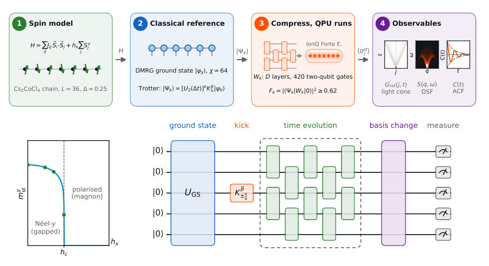
<figcaption class="paper-figure-caption"><b>Fig 1.</b> FIG. 1. Workflow for calculating the magnetic response. Top: the model of Cs2CoCl4 is a spin 1/2 XXZ chain with J = 0.23 meV, ∆= 0.25, and L = 36 sites. Classical DMRG and second order Trotter evolution supply reference states, which are approximated by circuits composed of D staircase layers of nearest neighbor two qubit blocks. The compressed circuits are executed on IonQ Forte Enterprise, and the measurements are used to reconstruct the retarded Green’s function, DSF, and local autocorrelations. Bottom left: reference phase diagram of the model. The staggered order parameter my st vanishes at the critical field separating the N´eel ordered regime from the phase polarized along x. Bottom...</figcaption>
</figure>
<figure class="paper-figure-card">
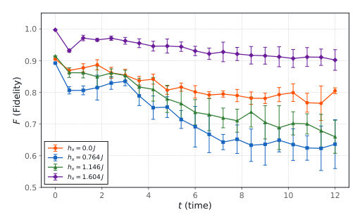
<figcaption class="paper-figure-caption"><b>Fig 2.</b> FIG. 2. Fidelity of the compressed state preparations rela- tive to their classical targets. At tk = 0, the plotted quan- tity is the ground state fidelity F0 in Eq. (6). At nonzero times tk = k∆t, with ∆t = 0.6/J, the curves show the fidelity Fk in Eq. (15), averaged with equal weights over the three spin channels (xx, yy, zz). The ground state cir- cuits use (252, 315, 232, 77) two qubit gates at hx/J = (0, 0.764, 1.146, 1.604), respectively. Every nonzero time point uses 420 two qubit gates. These fidelities quantify how closely the compressed circuits approximate their classical tar- get states before hardware execution.</figcaption>
</figure>
<figure class="paper-figure-card">
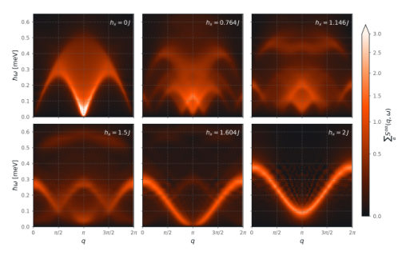
<figcaption class="paper-figure-caption"><b>Fig 3.</b> FIG. 3. Total DSF of the L = 100 site anisotropic (∆= 0.25) open chain at hx/J = (0, 0.764, 1.146, 1.5, 1.604, 2) ob- tained from DMRG-CV calculations with spectral broadening η = 0.1J. The spectrum evolves from a gapless two-spinon continuum at zero-field to a single gapped magnon beyond the critical point.</figcaption>
</figure>
<figure class="paper-figure-card">
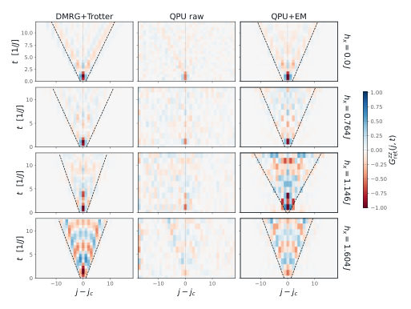
<figcaption class="paper-figure-caption"><b>Fig 4.</b> FIG. 4. Retarded Green’s function Gzz ret(j, t) for the L = 36 site anisotropic (∆= 0.25) open chain with a kick at jc = 17. Columns show DMRG+Trotter (L = 36), raw hardware, and error mitigated hardware results.</figcaption>
</figure>
<figure class="paper-figure-card">
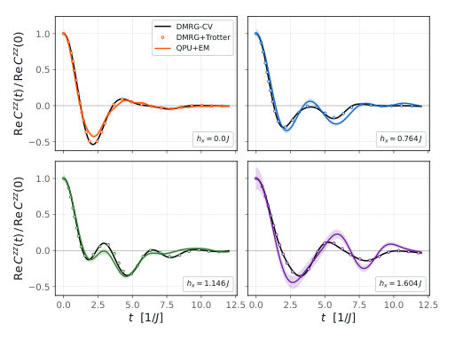
<figcaption class="paper-figure-caption"><b>Fig 5.</b> FIG. 5. Real part of the on-site spin-spin autocorrelation function ReCzz(t) ≡ReCz(jc, t) = Re ⟨σz jc(t)σz jc(0)⟩at site jc = 17. Each panel is normalized by the equal-time modulus |Czz(0)| = p</figcaption>
</figure>
</div>

<p><strong>Summary.</strong> This paper uses a trapped-ion quantum computer to simulate the magnetic excitation spectra of the quantum magnet Cs2CoCl4. By combining advanced quantum protocols with error mitigation, the authors successfully recovered the system's collective excitations and local correlations. The results validate the use of noisy quantum hardware for quantitative studies of strongly correlated matter, benchmarking against DMRG calculations.</p>
<p><strong>Why it may be interesting.</strong> This work provides a concrete, quantitative benchmark demonstrating how near-term quantum processors can tackle complex, strongly correlated many-body physics problems relevant to condensed matter theory.</p>
<details>
<summary>Detailed structure</summary>
<p><strong>Main problem.</strong> The study aims to test quantum computers' ability to simulate the collective excitation spectra and spin dynamics of strongly correlated quantum magnets, specifically addressing the impact of hardware noise on recoverable magnetic information.</p>
<p><strong>Main result.</strong> The quantum simulation successfully reconstructed the evolution of the excitation spectrum, showing agreement with DMRG benchmarks and connecting results to inelastic neutron scattering measurements.</p>
<p><strong>Method.</strong> The authors employed a quantum simulation protocol combining an ancilla-free local kick protocol with classical tensor network compression on a trapped-ion quantum computer.</p>
<p><strong>Model / system.</strong> The system is the quantum magnet Cs2CoCl4, modeled by an effective spin 1/2 XXZ Heisenberg chain Hamiltonian, which is studied across varying transverse magnetic fields.</p>
<p><strong>Key observables.</strong> Dynamical Spin Structure Factor (DSF), Retarded Green's Function (RGF), and local magnetic correlations (e.g., nearest neighbor spin correlations).</p>
<p><strong>Important parameters / regimes.</strong> System size L=36 sites, varying transverse field $h_x/J$ (e.g., 0 to 1.604), and time evolution steps up to $Jt=12$.</p>
<p><strong>Assumptions / limitations.</strong> The use of error mitigation techniques and classical circuit compression are necessary to overcome hardware noise limitations.</p>
<p><strong>Figures summary.</strong> Figures compare the reconstructed Dynamical Structure Factor (DOS) from quantum hardware simulations against theoretical benchmarks like DMRG-CV and DMRG+Trotter, showing quantitative agreement.</p>
<p><strong>Paper structure.</strong> The paper details the quantum protocol for measuring the retarded spin response, compares the results across different magnetic field regimes (Luttinger liquid to gapped/polarized phases), and validates the results using multiple quantitative metrics against established numerical methods.</p>
</details>
<details>
<summary>Abstract</summary>
<p>The collective excitation spectra of quantum magnets provide a direct test of quantum computers as tools for studying strongly correlated matter. Hardware noise limits the circuit depths available for these calculations, leaving the question of how much magnetic information can survive circuit compression. Using IonQ's 36 qubit Forte Enterprise processor, we simulate the magnetic excitation spectra and spin dynamics of a 36 site Heisenberg XXZ chain describing the quantum magnet Cs2CoCl4 in a transverse field using quantum circuits containing just 420 two qubit gates. The workflow combines an ancilla free local kick protocol with classical tensor network compression, encoding both ground state preparation and time evolution. The reconstructed dynamical structure factors capture the evolution from a broad two spinon continuum toward a dispersive branch with magnon character near the expected critical field. We observe an interesting field driven sign reversal of the nearest neighbor spin correlations which shows a complementary signature of this magnetic evolution. Our error mitigation methods bring the reconstructed total spectra into close agreement with density matrix renormalization group calculations, with Pearson correlation and structural similarity above 0.9 and normalized mean squared error below 0.15. We also perform comparisons with experimental inelastic neutron scattering measurements to connect the recovered excitations to the material's magnetic response. Our results demonstrate that circuit compression and error mitigation allow noisy quantum processors to recover both collective excitations and local magnetic correlations providing a quantitative benchmark for quantum spectroscopy and a basis for extending these methods to more complex magnetic systems.</p>
</details>
<p><sub><a href="#top">↑ back to top</a></sub></p>

<p><a id="paper-2610.03180"></a></p>
<h3 id="probing-fluctuating-hydrodynamics-through-current-fluctuations-in-hard-rod-gas"><a href="http://arxiv.org/abs/2610.03180v1">Probing fluctuating hydrodynamics through current fluctuations in hard rod gas</a></h3>
<p><strong>Authors:</strong> Tirthankar Mondal, Indranil Mukherjee, Anupam Kundu<br>
<strong>Type:</strong> theory · <strong>Category:</strong> statistical mechanics · <strong>PDF:</strong> <a href="https://arxiv.org/pdf/2610.03180v1">https://arxiv.org/pdf/2610.03180v1</a><br>
<strong>Analysis basis:</strong> full PDF text, analyzed in chunks
<strong>Topic relevance:</strong> 🔥 <code>Full counting statistics</code> <strong>4/5</strong> · <code>Keldysh / 2PI / non-Gaussian methods</code> <strong>2/5</strong> · <code>non-equilibrium universality</code> <strong>2/5</strong></p>
<div class="figure-strip-hint">↔ Scroll figures horizontally</div>
<div class="paper-figures-scroll">
<figure class="paper-figure-card">

<figcaption class="paper-figure-caption"><b>Fig 1.</b> Figure 1: (a) Comparison of the rate function Hbmft(q) given in Eq. (43) (blue line) with the numerical simulation of the microscopic dynamics (circles) for an equilibrium gas of hard rods at times T = 10, 20, 40, and 80. The Gaussian rate function (orange dashed line) is constructed using the variance given in Eq. (50). While the typical fluctuations are well described by the Gaussian form, the atypical fluctuations in the tails exhibit clear deviations from Gaussian behavior. For the numerical simulation, the initial configurations are generated in the point- particle representation. For each T, we consider N = 5T particles uniformly distributed over the interval [−L/2, L/2], with L =...</figcaption>
</figure>
<figure class="paper-figure-card">

<figcaption class="paper-figure-caption"><b>Fig 2.</b> Figure 2: Plot comparing rate function Hbmft(q) given in Eq. (43) (blue line) with the numerical simulation of the microscopic dynamics (circles) for an inhomogeneous initial profile at time T = 100. For the numerical simulation, the initial configurations are generated in point-particle representation. In particular, N = 2500 point particles distributed on the interval [−L/2, L/2]. Their positions are sampled from the distribution p(x) = 4 L  0.225 + 0.05 1+exp(−x/ℓ)  , with L = 10000 and ℓ= 500. These positions are subsequently mapped onto the corresponding hard-rod configurations using Eq. (7). The velocity distribution is taken to be a zero-mean Maxwellian with temperature T0 = 1. The...</figcaption>
</figure>
<figure class="paper-figure-card">

<figcaption class="paper-figure-caption"><b>Fig 3.</b> Figure 3: Comparison of the second cumulant ⟨Q(T)2⟩cb c,eq obtained from the CBFHD approach, as in Eq. (72) (blue line), with numerical simulations (squares). The simulations are performed for a homogeneous gas of hard rods with density ϱ0 = 0.2, rod length a = 1, and N = 1640 rods. The velocities are sampled from a zero-mean Maxwellian distribution with temperature T0 = 1. The rods evolve according to the effective Brownian dynamics in Eq. (10a), with an effective drift, but are driven by correlated noises as given in Eq. (10b). The inset shows the convergence of the cumulant to its asymptotic value. For comparison, the second cumulant obtained from the BMFT approach, following Eq. (50)...</figcaption>
</figure>
<figure class="paper-figure-card">

<figcaption class="paper-figure-caption"><b>Fig 4.</b> Figure 4: (a) Comparison of the rate function Hcb(q) (blue solid line), obtained by iteratively solving Eq. (65) with the numerical simulation for a homogeneous hard-rod gas of density ϱ0 = 0.2, rod length a = 1 at times T = 10, 30, 50 (circles).The simulations are performed for N = 1650, with velocities sampled from a zero-mean Maxwellian distribution at temperature T0 = 1. The numerical results are obtained by evolving the hard rods according to the effective Brownian dynamics in Eq. (10a), with an effective drift, but are driven by correlated noises as given in Eq. (10b). The Gaussian distribution, constructed using Eq. (72), is shown for comparison (green dashed line). While the typical...</figcaption>
</figure>
<figure class="paper-figure-card">

<figcaption class="paper-figure-caption"><b>Fig 5.</b> Figure 5: Plot comparing the probability distribution of integrated current Pr(Q, T) between the analytical exact expression (blue line) following Eqs. (5) and (86) and the numerical simulation (orange points) for an equilibrium gas of hard rods with density ϱ0 = 1/3 at time T = 50. For the numerical simulation, initial configurations are generated in the point-particle representation with point-particle density ϕ0 = 0.5. N = 200 particles sampled uniformly from the interval [−L, L] with L = 200 and subsequently mapped to the hard-rod configurations using Eq. (7). The velocity distribution is taken to be a zero-mean Maxwellian at temperature T0 = 1, and the rod length a = 1. The numerical...</figcaption>
</figure>
</div>

<p><strong>Summary.</strong> This paper investigates the current fluctuations in a 1D hard-rod gas by applying two fluctuating hydrodynamic theories: BMFT and CBFHD. The authors find that BMFT accurately predicts the large-deviation statistics of the integrated current, matching direct simulations. Conversely, the CBFHD approach fails to capture the correct large-scale current fluctuations, highlighting the importance of the underlying microscopic integrability.</p>
<p><strong>Why it may be interesting.</strong> The comparison between two distinct hydrodynamic theories (BMFT vs. CBFHD) in an integrable system provides a rigorous test case for the applicability of continuum approximations in non-equilibrium statistical mechanics.</p>
<details>
<summary>Detailed structure</summary>
<p><strong>Main problem.</strong> The study focuses on determining the full counting statistics (FCS) of the integrated current in a one-dimensional hard-rod gas at equilibrium, and comparing predictions from different theoretical frameworks.</p>
<p><strong>Main result.</strong> The Ballistic Macroscopic Fluctuation Theory (BMFT) successfully predicts the large-deviation function for the current distribution, showing quantitative agreement with microscopic simulations, while the Diffusive fluctuating hydrodynamic theory (CBFHD) fails to capture these large-scale fluctuations.</p>
<p><strong>Method.</strong> The authors employ advanced theoretical tools, including Ballistic Macroscopic Fluctuation Theory (BMFT) and Diffusive fluctuating hydrodynamic theory (CBFHD), to analyze the large-deviation behavior of the integrated current.</p>
<p><strong>Model / system.</strong> The system studied is a one-dimensional hard-rod gas, which is a paradigmatic integrable many-body system. Its dynamics are related to hard-point particles and analyzed in the thermodynamic limit.</p>
<p><strong>Key observables.</strong> Full counting statistics of the integrated current, current cumulants, and the large-deviation function.</p>
<p><strong>Important parameters / regimes.</strong> Equilibrium state, ballistic scaling, and the initial state inhomogeneity factorized in point-particle coordinates.</p>
<p><strong>Assumptions / limitations.</strong> The analysis relies on comparing predictions derived from BMFT and CBFHD against direct numerical simulations of the microscopic dynamics.</p>
<p><strong>Paper structure.</strong> The paper introduces the hard-rod system and its mapping to point particles, then details the application of BMFT to derive the large-deviation function, followed by an analysis and comparison with the CBFHD framework against numerical results.</p>
</details>
<details>
<summary>Abstract</summary>
<p>We study the full counting statistics of the integrated current in a one-dimensional hard-rod gas in equilibrium, employing two recently proposed fluctuating hydrodynamic frameworks: (i) Ballistic Macroscopic Fluctuation Theory (BMFT) and (ii) diffusive fluctuating hydrodynamic theory based on correlated Brownian motion approximation of hard-rod quasiparticles (CBFHD). We investigate how the predictions of these two approaches compare with each other and with the underlying microscopic dynamics. We show within BMFT that the current distribution admits a large-deviation form under ballistic scaling, and we derive an explicit expression for the large-deviation function, valid for an arbitrary inhomogeneous initial state factorized in point-particle coordinates. The corresponding current cumulants are also obtained. We subsequently analyze the current statistics within the CBFHD framework, which explicitly incorporates stochastic noise and dissipative terms, and demonstrate that the current distribution likewise obeys a large-deviation principle in this approach. We find that, while BMFT predictions for the first few cumulants and the rate function are in excellent agreement with direct numerical simulations of the microscopic hard-rod dynamics, CBFHD prediction is not. We further verify the predictions of the CBFHD independently using a collection of correlated Brownian motions, which provides an approximate description of the dynamics of hard-rod quasiparticles. Our findings indicate that CBFHD does not accurately capture large-scale current fluctuations in the hard-rod gas, whereas BMFT yields predictions in quantitative agreement with the microscopic dynamics, at least in the context of full counting statistics.</p>
</details>
<p><sub><a href="#top">↑ back to top</a></sub></p>

<p><a id="paper-2610.03241"></a></p>
<h3 id="stimulated-parametric-down-conversion-from-foundational-coherence-to-structured-light-applications"><a href="http://arxiv.org/abs/2610.03241v1">Stimulated Parametric Down-Conversion: From Foundational Coherence to Structured Light Applications</a></h3>
<p><strong>Authors:</strong> M. F. Z. Arruda, M. G. Damaceno, G. H. dos Santos, R. Medeiros de Araújo, N. Rubiano da Silva, S. P. Walborn, P. H. Souto Ribeiro<br>
<strong>Type:</strong> both · <strong>Category:</strong> other · <strong>PDF:</strong> <a href="https://arxiv.org/pdf/2610.03241v1">https://arxiv.org/pdf/2610.03241v1</a><br>
<strong>Analysis basis:</strong> full PDF text, analyzed in chunks
<strong>Topic relevance:</strong> 🔥 <code>interference shaping light</code> <strong>4/5</strong> · <code>Keldysh / 2PI / non-Gaussian methods</code> <strong>2/5</strong> · <code>driven-dissipative phase transition</code> <strong>1/5</strong> · <code>methods for driven-dissipative</code> <strong>1/5</strong></p>
<div class="figure-strip-hint">↔ Scroll figures horizontally</div>
<div class="paper-figures-scroll">
<figure class="paper-figure-card">

<figcaption class="paper-figure-caption"><b>Fig 1.</b> FIG. 1. Typical StimPDC experimental scheme. NLC is the nonlinear crystal, with Φ(q1, q2) being the function describing the conversion of the pump field v(q1 + q2) by the NLC. The functions v∗ s(q1) and vidler(q2) are the seed and idler fields, respectively. All functions relate to the corresponding angular spectra. See more details in the main text.</figcaption>
</figure>
<figure class="paper-figure-card">

<figcaption class="paper-figure-caption"><b>Fig 2.</b> FIG. 2. Transfer of seed angular spectrum v∗ s(q2) via Stim- PDC. The insets illustrate pump intensity, seed and idler intensity (upper patterns) and corresponding Fourier Trans- forms (lower patterns) for seed and idler.</figcaption>
</figure>
<figure class="paper-figure-card">

<figcaption class="paper-figure-caption"><b>Fig 3.</b> FIG. 3. Transfer of pump-phase-matching angular spectrum Φ(q1, q2) = v(q1 +q2) γ(q1 −q2) via StimPDC. The insets il- lustrate seed intensity, pump and idler intensities (upper pat- terns) and corresponding Fourier Transforms (lower patterns).</figcaption>
</figure>
<figure class="paper-figure-card">

<figcaption class="paper-figure-caption"><b>Fig 4.</b> FIG. 4. Illustration of stimulated emission driven by struc- tured light. A Laguerre–Gauss mode is used to stimulate emission in a nonlinear crystal pumped with a Gaussian blue laser light. The generated idler beam acquires the same topo- logical charge as the seed with opposite sign.</figcaption>
</figure>
<figure class="paper-figure-card">

<figcaption class="paper-figure-caption"><b>Fig 5.</b> FIG. 5. Cross-modulation of light fields in stimulated down- conversion. A triangular-shaped beam pumps the nonlinear medium, while a Laguerre–Gauss beam stimulates the down- conversion process. The resulting idler beam carries the prod- uct of the two beams.</figcaption>
</figure>
</div>

<p><strong>Summary.</strong> This review comprehensively analyzes Stimulated Parametric Down-Conversion (StimPDC), showing how it acts as a powerful instrument for manipulating structured light. By deriving a key amplitude product relation, the authors unify disparate experimental observations, from image transfer to orbital angular momentum conservation. The work is crucial for understanding how to engineer quantum light sources for advanced applications.</p>
<p><strong>Why it may be interesting.</strong> It provides a detailed, unified theoretical framework for controlling spatial modes and coherence in nonlinear optical processes, bridging classical beam shaping with quantum entanglement generation.</p>
<details>
<summary>Detailed structure</summary>
<p><strong>Main problem.</strong> The paper reviews the transverse spatial physics of Stimulated Parametric Down-Conversion (StimPDC), treating the process as a controllable instrument rather than just a source of quantum light.</p>
<p><strong>Main result.</strong> A single mathematical relation organizes diverse phenomena in StimPDC, showing that the idler amplitude is proportional to the pointwise product of the pump and the complex conjugate of the seed field in the thin-crystal limit.</p>
<p><strong>Method.</strong> The analysis uses quantum field theory formalism, calculating expectation values for intensity and deriving amplitude relations in the low-gain, undepleted-pump regime.</p>
<p><strong>Model / system.</strong> The system is StimPDC, the seeded version of SPDC, involving signal, idler, and pump fields. The formalism is adapted from SPDC to StimPDC, allowing for a continuous transition to the non-classical regime.</p>
<p><strong>Key observables.</strong> Idler intensity $I(\vec{
ho}_2)$, coherence properties ($\mu_{12}$), and the spatial structure of the output beam (e.g., OAM, geometric patterns).</p>
<p><strong>Important parameters / regimes.</strong> Low-gain regime, thin-crystal limit, seed photon rate ($N$), and the pump/seed field profiles ($E_p, E_s$).</p>
<p><strong>Assumptions / limitations.</strong> The analysis is primarily limited to the low-gain, undepleted-pump regime, and the amplitude product relation is exact only in the thin-crystal limit.</p>
<p><strong>Figures summary.</strong> Figure 1 illustrates a typical StimPDC experimental setup, defining the conversion function $\Phi(q_1, q_2)$ that governs the process.</p>
<p><strong>Paper structure.</strong> The paper progresses by first establishing the general formalism, deriving the key amplitude product relation, demonstrating its applicability to various spatial phenomena (image transfer, OAM conservation), and finally discussing the transition to the high-gain and quantum regimes.</p>
</details>
<details>
<summary>Abstract</summary>
<p>Stimulated parametric down-conversion (StimPDC) is the seeded version of the process that underlies much of photonic quantum information. Replacing the vacuum at one input port with a coherent seed leaves the interaction Hamiltonian, the phase-matching function and the two-photon amplitude unchanged, while raising the output to levels accessible with ordinary classical detectors. This review treats the transverse spatial physics of that process. We show that a single relation, in which the idler amplitude is the pointwise product of the pump field with the complex conjugate of the seed, organizes results usually presented separately: the image and coherence transfer experiments of the 1990s; phase conjugation and its use for wavefront correction; the conservation and conjugation of orbital angular momentum, together with the generation of radial modes and geometric intensity patterns; and the processing of vector vortex beams carrying spatially varying polarization. We then consider StimPDC as an instrument rather than as an object of study, covering stimulated emission tomography, the experimental realization of Klyshko's advanced-wave picture, and the transfer of partial coherence, including the conservation of the twist phase of twisted Gaussian Schell-model beams. We close with the quantum regime, reached when the seed approaches the single-photon level or the idler is used as a herald, and with an assessment of open problems and prospective applications.</p>
</details>
<p><sub><a href="#top">↑ back to top</a></sub></p>

<p><a id="paper-2610.03609"></a></p>
<h3 id="the-qick-box-a-modular-rf-front-end-system-for-quantum-control-and-readout"><a href="http://arxiv.org/abs/2610.03609v1">The QICK Box: A Modular RF Front-End System for Quantum Control and Readout</a></h3>
<p><strong>Authors:</strong> L. Arnaldi, D. Martin, S. Sussman, S. Uemura, K. Treptow, N. Wilcer, A. Colón Cesaní, O. Seidel, K. Anyang, G. Bratrud, F. Abouzahr, J. Christiansen-Salameh, D. Baxter, G. Cancelo<br>
<strong>Type:</strong> experiment · <strong>Category:</strong> quantum information and computing · <strong>PDF:</strong> <a href="https://arxiv.org/pdf/2610.03609v1">https://arxiv.org/pdf/2610.03609v1</a><br>
<strong>Analysis basis:</strong> full PDF text, analyzed in chunks
<strong>Topic relevance:</strong> 🔥 <code>QC/QI experiment</code> <strong>4/5</strong> · <code>quantum measurements</code> <strong>3/5</strong></p>
<div class="figure-strip-hint">↔ Scroll figures horizontally</div>
<div class="paper-figures-scroll">
<figure class="paper-figure-card">

<figcaption class="paper-figure-caption"><b>Fig 1.</b> FIG. 1. QICK Box 2U front-panel assembly. The internal RF Main board hosts the modular daughter cards, which are connected to the front-panel SMA interfaces via high-performance coaxial cables. This 2U rack-mount configuration provides a shielded environment for the RFSoC and signal-conditioning electronics, ensuring robust connectivity for large-scale quantum experiments.</figcaption>
</figure>
<figure class="paper-figure-card">

<figcaption class="paper-figure-caption"><b>Fig 2.</b> FIG. 2. System integration of the QICK Box. The architecture is split between the AMD ZCU216 RFSoC (left), which performs digital synthesis and high-speed data conversion, and the companion RF Main board (right). The RF Main board hosts the modular daughter cards responsible for analog signal conditioning, including low-noise amplification, programmable filtering, and power leveling across the 0.1–9GHz range.</figcaption>
</figure>
<figure class="paper-figure-card">

<figcaption class="paper-figure-caption"><b>Fig 3.</b> FIG. 3. RF output daughter card block diagram. The chain uti- lizes a 10 GHz balun for differential-to-single-ended conversion, fol- lowed by an ADMV8818 digitally programmable bandpass filter to suppress Nyquist images and out-of-band spurs across the 100 MHz to 9 GHz range. The final stage comprises two PMA3-83LN+ gain stages and two PE43705 digital step attenuators.</figcaption>
</figure>
<figure class="paper-figure-card">

<figcaption class="paper-figure-caption"><b>Fig 4.</b> FIG. 4. RF input daughter card block diagram. The receiver chain is optimized for high sensitivity, featuring a MAAL-011130 LNA as the primary stage to achieve a 1.4dB noise figure. Signal condi- tioning is managed via pSemi digital step attenuators and an Analog Devices ADMV8818 tunable bandpass filter, providing up to 90dB of total gain and robust out-of-band rejection for quantum readout applications.</figcaption>
</figure>
<figure class="paper-figure-card">

<figcaption class="paper-figure-caption"><b>Fig 5.</b> FIG. 5. DC-coupled output daughter card block diagram. The ar- chitecture features a Texas Instruments LMH5401 in a single-ended configuration with the negative output terminated to 50Ω. A 1.8GHz low-pass filter (LPF) ensures suppression of high-frequency images and clock feedthrough.</figcaption>
</figure>
</div>

<p><strong>Summary.</strong> This paper introduces and characterizes the QICK Box, a modular, high-speed RF front-end system for quantum control. By performing single-shot readout measurements on a transmon qubit, the authors demonstrated that the system achieves high fidelity and signal-to-noise ratios. This confirms the QICK Box as a robust, versatile platform essential for advancing quantum information science experiments.</p>
<p><strong>Why it may be interesting.</strong> This work provides a critical, high-performance piece of infrastructure for quantum computing experiments, directly impacting the feasibility of implementing complex quantum algorithms by ensuring high-quality measurement data.</p>
<details>
<summary>Detailed structure</summary>
<p><strong>Main problem.</strong> To detail the hardware specifications and measure the performance of the QICK Box, a modular RF front-end system designed for high-fidelity quantum control and readout.</p>
<p><strong>Main result.</strong> The QICK Box successfully demonstrated high-fidelity single-shot readout of a transmon qubit, achieving 91.7% fidelity and an SNR of 4.4, confirming its suitability for advanced quantum experiments.</p>
<p><strong>Method.</strong> The performance was validated through single-shot dispersive readout measurements on a transmon device, utilizing programmable filtering and signal conditioning chains.</p>
<p><strong>Model / system.</strong> The system centers on the QICK Box, an open-source, modular RF front-end built around an RFSoC FPGA, capable of interfacing with superconducting qubits (like transmon devices) for control and measurement.</p>
<p><strong>Key observables.</strong> Readout Fidelity (91.7% $\pm$ 0.4%), Single-Shot SNR (4.4 $\pm$ 0.1), Noise Temperature, and DC Bias Noise Floor.</p>
<p><strong>Important parameters / regimes.</strong> RF bandwidth up to 10 GHz, 20-bit DC biasing, and the qubit relaxation time ($T_1$) which limits the fidelity.</p>
<p><strong>Assumptions / limitations.</strong> The readout fidelity is primarily limited by the qubit's $T_1$ decay during the measurement window, rather than the electronic noise floor of the QICK Box.</p>
<p><strong>Figures summary.</strong> Figures illustrate the comparison of Power Spectral Density (PSD) with and without Bandpass Filters (BPF), demonstrating noise floor reduction, and show I-Q scatter plots used to quantify state separation and readout fidelity.</p>
<p><strong>Paper structure.</strong> The paper describes the hardware architecture (QICK Board, daughtercards), details the signal conditioning chains (RF/DC), presents the experimental methodology using single-shot readout, and concludes with performance metrics and limitations.</p>
</details>
<details>
<summary>Abstract</summary>
<p>The QICK (Quantum Instrumentation Control Kit), first introduced in 2022, is a standalone open source control system for quantum information science. Since then, QICK has been migrated to new hardware platforms, expanded its functionality for applications with different types of qubits (superconducting, atomic, ion-trapped, and spin defects), as well as quantum sensors, and quantum networks. QICK is a highly optimized control kit, with a library of functions that can be used for more than one application. In particular, the software and firmware are customized to minimize latency and maximize control performance and throughput. In this white paper, we describe hardware details and performance of the QICK Box. The QICK Box features up to 16 outputs, up to 8 inputs, and 8 20-bit DC biases. Modular output and input daughtercards give the choice of signal chains optimized for fast DC-coupled signals or RF signals up to 10 GHz. Power levels, step attenuation, and bandpass filtering are controlled by software. We demonstrate the system's performance through single-shot readout measurements of a six-transmon device at the Quantum Underground Instrumentation Experimental Testbed (QUIET) at Fermilab, achieving (91.7 +/- 0.4)% readout fidelity limited by T1 decay during the readout. The single shot readout signal-to-noise ratio (SNR) is 4.4 +/- 0.1 without a quantum amplifier, confirming that the QICK Box is suitable for high-fidelity quantum control and measurement applications. Advances in firmware and software will be described in a separate paper.</p>
</details>
<p><sub><a href="#top">↑ back to top</a></sub></p>

<p><a id="paper-2610.03678"></a></p>
<h3 id="finite-momentum-pairing-and-magnetic-halos-in-a-spin-imbalanced-holstein-model"><a href="http://arxiv.org/abs/2610.03678v1">Finite-momentum pairing and magnetic halos in a spin-imbalanced Holstein model</a></h3>
<p><strong>Authors:</strong> Chunhan Feng, George Batrouni, Richard Scalettar<br>
<strong>Type:</strong> theory · <strong>Category:</strong> strongly correlated electrons · <strong>PDF:</strong> <a href="https://arxiv.org/pdf/2610.03678v1">https://arxiv.org/pdf/2610.03678v1</a><br>
<strong>Analysis basis:</strong> full PDF text, analyzed in chunks
<strong>Topic relevance:</strong> 🔥 <code>analog quantum simulation</code> <strong>4/5</strong> · <code>Rydberg arrays</code> <strong>2/5</strong></p>
<div class="figure-strip-hint">↔ Scroll figures horizontally</div>
<div class="paper-figures-scroll">
<figure class="paper-figure-card">

<figcaption class="paper-figure-caption"><b>Fig 1.</b> FIG. 1. Fermi-surface matching and finite-momentum pairing. Non-interacting Fermi surfaces at n = 0.625 for (a) zero magnetization, m = 0, and (c) finite magnetiza- tion, m = 0.206. Panels (b) and (d) show the correspond- ing momentum-dependent pair susceptibilities χpair(k). At m = 0.206 (d), χpair(⃗k) is maximum at ⃗Q = (π/4, 0) and its symmetry-equivalent momenta. In (c), dashed line denotes the spin-down Fermi surface shifted by ⃗Q = (π/4, 0). Calcu- lations are done on a 16 × 16 lattice at β = 16.</figcaption>
</figure>
<figure class="paper-figure-card">

<figcaption class="paper-figure-caption"><b>Fig 2.</b> FIG. 2. Signatures of FFLO superconductivity. (a) Real space pairing correlation Cp(⃗r ) along the diagonal line cut ⃗r = (r, r) at different magnetizations m. (b) Pair suscep- tibility χpair along momentum line-cut ⃗k = (0, 0) →(π, 0) → (π, π) →(0, 0). Parameters are the same as in Fig. 3. Calcula- tions are performed on a 16×16 lattice with density n = 0.875 at β = 16. The large, positive r = 0 value is suppressed to enable the plot to focus on the smaller off-site correlations.</figcaption>
</figure>
<figure class="paper-figure-card">

<figcaption class="paper-figure-caption"><b>Fig 3.</b> FIG. 3. Intertwined Orders. (a-d): Orange and green denote positive and negative pairing correlations Cp, respec- tively. Red and blue arrows denote positive and negative spin-X correlations Cx. (e-h): Pink and blue denote posi- tive and negative spin-Z correlations Cz. (i-l) purple and yel- low denote positive and negative spin-up density correlations Cn↑. Red dashed lines enclose regions where CDW exhibits a π phase shift. All correlations are measured relative to the central site, with arrow sizes scaling with the corresponding correlation strength. FFLO pairing and CDW order dominate the central region, while for m ∼1 −n, staggered magnetic correlations emerge in the pairing-suppressed...</figcaption>
</figure>
<figure class="paper-figure-card">

<figcaption class="paper-figure-caption"><b>Fig 4.</b> FIG. 4. Evolution of the FFLO halo in the magnetization m–inverse-temperature β plane. Maximum (a) pair susceptibility, (b) CDW structure factor, and (c) spin-Z correlation Sz(π, π) as functions of m and β. Symbols indicate the shift of the peak wave vector (∆Q∗ x, 0) away from (0, 0) in (a) and (π, π) in (b). Dashed lines are guides to the eye. The region to the right of the dashed line in (a) indicates finite-momentum pairing, while that to the left of the dashed line in (b) indicates strong CDW. The dashed lines in (c) reproduce those in (a) and (b). The purple-shaded intermediate regime denotes the region where a halo of staggered spin-Z correlations is observed. Parameters are the same...</figcaption>
</figure>
<figure class="paper-figure-card">

<figcaption class="paper-figure-caption"><b>Fig 5.</b> FIG. 5. Pair susceptibility and charge and spin-Z structure factors. As functions of temperature T for two magnetizations, m ≈0.13 and 0.25. The dashed line marks the temperature T ∗below which the finite-momentum pair susceptibility exceeds its zero-momentum value, indicating the onset of FFLO pairing. At m ≈0.13, where the FFLO with a magnetic halo is observed, both Sn and Sz exhibit a sharp increase just below T ∗. In contrast, at m = 0.25, where no FFLO halo is observed, both structure factors remain sub- stantially smaller and show no comparable increase.</figcaption>
</figure>
</div>

<p><strong>Summary.</strong> This work investigates finite-momentum pairing (FFLO superconductivity) in a spin-imbalanced system using the Holstein model. By employing DQMC, the authors overcome sign problem limitations to show that increasing spin imbalance drives the pairing into a finite-momentum state. The study reveals a rich interplay where FFLO pairing coexists spatially with charge-density-wave order and magnetic halo structures.</p>
<p><strong>Why it may be interesting.</strong> The explicit connection drawn between the Holstein model, FFLO physics, and the potential for realization in cold-atom platforms (like Rydberg atoms) makes this highly relevant to AMO physics.</p>
<details>
<summary>Detailed structure</summary>
<p><strong>Main problem.</strong> The study of Fulde-Ferrell-Larkin-Ovchinnikov (FFLO) superconductivity, which involves Cooper pairing at finite momentum driven by spin imbalance, is challenging due to the fermion sign problem.</p>
<p><strong>Main result.</strong> The Holstein model allows for unbiased simulation of FFLO pairing, showing that increasing spin imbalance shifts pairing from zero to finite momentum ($\vec{Q} 
eq 0$) and coexisting with charge-density-wave order and magnetic halos.</p>
<p><strong>Method.</strong> Determinant Quantum Monte Carlo (DQMC) simulations were employed to study the system's ground state properties.</p>
<p><strong>Model / system.</strong> The research uses the spin-imbalanced two-dimensional Holstein model, which incorporates phonon-mediated attraction, allowing it to bypass the severe sign fluctuations encountered in the attractive Hubbard model.</p>
<p><strong>Key observables.</strong> Pairing susceptibility ($\chi_{	ext{pair}}(\vec{Q})$), real-space pair correlations ($C_p(\vec{r})$), charge-density-wave order ($S_n(\vec{Q})$), and staggered longitudinal spin correlations ($C_z(\vec{r})$).</p>
<p><strong>Important parameters / regimes.</strong> High density ($n \approx 0.875$) and varying magnetization ($m$), particularly near the regime $m \approx 1-n$.</p>
<p><strong>Assumptions / limitations.</strong> The Holstein model is used as an effective description, and the DQMC method is assumed to provide accurate results despite the complexity of the correlated state.</p>
<p><strong>Figures summary.</strong> Figures illustrate the shift of the pairing susceptibility peak to finite $\vec{Q}$ with increasing magnetization, and show spatial patterns of coexisting pairing, CDW, and magnetic halo correlations.</p>
<p><strong>Paper structure.</strong> The paper progresses by first establishing the feasibility of simulating FFLO physics using the Holstein model, then quantifying the shift in pairing momentum, and finally detailing the complex spatial coexistence of pairing, CDW, and magnetic halo textures at high density.</p>
</details>
<details>
<summary>Abstract</summary>
<p>Fulde-Ferrell-Larkin-Ovchinnikov (FFLO) superconductivity, Cooper pairing at finite-momentum driven by spin imbalance, remains difficult to study numerically in two dimensions. The fermion sign problem in the spin-imbalanced attractive Hubbard model severely limits quantum Monte Carlo access to the low temperatures where pairing correlations are most pronounced. We show that the Holstein model, in which the effective attraction is retarded by phonon dynamics, strongly suppresses sign fluctuations under spin imbalance, enabling unbiased determinant quantum Monte Carlo simulations deep in this regime. With increasing magnetization, zero-momentum pairing evolves into finite-momentum FFLO pairing, evidenced by oscillating real-space pair correlations and a shift of the pairing susceptibility peak to finite $\vec{Q}$. The finite-momentum susceptibility substantially exceeds its zero-momentum value. At high density $n \sim 0.875$, near magnetization $m \approx 1-n$ where the majority-spin density approaches half filling, FFLO pairing coexists with checkerboard charge-density-wave order at short range, while staggered longitudinal spin correlations emerge as a magnetic halo at larger distances. These spatial textures provide experimentally accessible signatures of finite-momentum pairing and motivate cold-atom realizations of FFLO physics.</p>
</details>
<p><sub><a href="#top">↑ back to top</a></sub></p>

<p><a id="paper-2610.03150"></a></p>
<h3 id="self-organized-layered-structures-of-nitrogen-vacancy-centers-with-preferential-orientation-in-heteroepitaxial-diamond-films"><a href="http://arxiv.org/abs/2610.03150v1">Self-organized Layered Structures of Nitrogen-Vacancy Centers with Preferential Orientation in Heteroepitaxial Diamond Films</a></h3>
<p><strong>Authors:</strong> Vadim Lebedev, Alejandro Martínez-Méndez, Jesús Moreno-Meseguer, Jan Engels, Jürgen Weippert, Jan Kustermann, Felix Hoffmann, Javier Prior, Jan Jeske<br>
<strong>Type:</strong> experiment · <strong>Category:</strong> quantum information and computing · <strong>PDF:</strong> <a href="https://arxiv.org/pdf/2610.03150v1">https://arxiv.org/pdf/2610.03150v1</a><br>
<strong>Analysis basis:</strong> full PDF text, analyzed in chunks
<strong>Topic relevance:</strong> 🔥 <code>QC/QI experiment</code> <strong>4/5</strong> · <code>quantum measurements</code> <strong>1/5</strong> · <code>quantum optics experiment</code> <strong>1/5</strong></p>
<div class="figure-strip-hint">↔ Scroll figures horizontally</div>
<div class="paper-figures-scroll">
<figure class="paper-figure-card">

<figcaption class="paper-figure-caption"><b>Fig 1.</b> FIG. 2: Cross-sectional studies of the sample prepared by a cCVD process: cross-sectional a) SEM and b) cPL images demonstrate variations in a NV incorporation efficiency. c) High-resolution, cross-sectional SEM showing the structure of a {111}-bounded pit, d) schematic illustration of a (111) growth mode along with the dominant orientation of the NV pairs.</figcaption>
</figure>
<figure class="paper-figure-card">

<figcaption class="paper-figure-caption"><b>Fig 2.</b> FIG. 1: Photoluminescence (PL) map of the full 47 mm- diameter diamond wafer. Shown is the peak intensity of the zero-phonon-line (ZPL) associated with the negatively charged (NV−) state of the NV center, corrected by the base- line from the phonon side bands.</figcaption>
</figure>
<figure class="paper-figure-card">

<figcaption class="paper-figure-caption"><b>Fig 3.</b> FIG. 3: ODMR study of NV−populated areas. a) An offset magnetic field is added to separate the electronic spin tran- sitions of each of the four crystallographic directions. b) the optical contrast Ci of each dip is obtained from a 10x12 pixel region (zone under white rectangle), revealing four comple- mentary regions of preferential NV alignment.</figcaption>
</figure>
<figure class="paper-figure-card">

<figcaption class="paper-figure-caption"><b>Fig 4.</b> FIG. 5: Model of the proposed (111) overgrowth mechanism. (a) Isometric view of a 111-bounded pit after oxygen-plasma etching. (b) Cross-sectional schematic illustrating the forma- tion of (111)-oriented epilayers on the 111 sidewalls. (c) CL spectra acquired from the etched pit (position A) and from the overgrown surface (position B).</figcaption>
</figure>
<figure class="paper-figure-card">

<figcaption class="paper-figure-caption"><b>Fig 5.</b> FIG. 4: Plan-view studies of the samples prepared by the cCVD process: a) PL map of the overgrown surface (in- sert: high-resolution PL map); and b) SEM image of the oxygen-plasma-etched (100) surface with the characteristic 111-bounded pits (inset: high-resolution SEM image).</figcaption>
</figure>
</div>

<p><strong>Summary.</strong> This work reports the fabrication of wafer-scale diamond films featuring highly ordered, layered structures of $   ext{NV}^-$ centers. By using a cyclic etching/growth process, the researchers achieved preferential alignment of these quantum emitters along specific crystal facets. This controlled patterning is crucial for developing integrated, addressable solid-state quantum devices.</p>
<p><strong>Why it may be interesting.</strong> The precise, controlled engineering of solid-state quantum emitters ($   ext{NV}^-$) in a scalable, patterned manner is highly relevant to quantum information science, offering a platform for solid-state qubits and quantum memory.</p>
<details>
<summary>Detailed structure</summary>
<p><strong>Main problem.</strong> The paper addresses the fabrication and characterization of diamond films containing highly ordered, three-dimensional layered structures of negatively charged nitrogen-vacancy color centers ($ ext{NV}^-$) on a wafer scale.</p>
<p><strong>Main result.</strong> A cyclic CVD growth and etching process successfully creates $ ext{NV}^-$-rich micro-clusters with preferential, uniform alignment of $    ext{NV}$ pairs along the [111] direction, enabling scalable quantum architectures.</p>
<p><strong>Method.</strong> The authors employed a cyclic process involving Chemical Vapor Deposition ($    ext{CVD}$) and oxygen-plasma etching, followed by advanced characterization using $ ext{ODMR}$, $   ext{cPL}$, and $    ext{CL}$ spectroscopy.</p>
<p><strong>Model / system.</strong> The physical system is the diamond lattice hosting $    ext{NV}^-$ color centers. The methodology relies on controlling crystal growth anisotropy by etching to create $\{111\}$-bounded pits, which are then overgrown to enhance $   ext{NV}$ concentration and alignment.</p>
<p><strong>Key observables.</strong> Photoluminescence ($   ext{PL}$) map showing $ ext{ZPL}$ at $637 	ext{ nm}$; Optically Detected Magnetic Resonance ($   ext{ODMR}$) confirming preferential alignment; Coherence time ($T_2$) measured at $34.6 \pm 2.5 \mu	ext{s}$.</p>
<p><strong>Important parameters / regimes.</strong> Wafer scale (two-inch), $   ext{NV}^-$ state, $\{111\}$ facet orientation, and the cyclic $    ext{CVD}$ growth parameters.</p>
<p><strong>Assumptions / limitations.</strong> The enhanced $   ext{NV}^-$ emission originates specifically from the inclined $\{111\}$ sidewalls formed during the etching/overgrowth cycle, which dictates the alignment.</p>
<p><strong>Figures summary.</strong> Figures show $ ext{PL}$ maps indicating layered structures, cross-sections confirming $\{111\}$-bounded pits, and $   ext{ODMR}$ spectra demonstrating four complementary regions of $    ext{NV}$ alignment.</p>
<p><strong>Paper structure.</strong> The paper details the fabrication process using cyclic $   ext{CVD}$ to create 3D layered structures. It then characterizes these structures using $   ext{SEM}$, $    ext{cPL}$, and $    ext{ODMR}$ to prove the preferential alignment of $ ext{NV}$ centers along the [111] direction, culminating in discussions of potential quantum device applications.</p>
</details>
<details>
<summary>Abstract</summary>
<p>Here, we report the fabrication and characterization of single crystal diamond films on a two-inch wafer-scale containing three-dimensional layered structures of negatively charged nitrogen-vacancy color centers (NV$^{-}$). The (100)-oriented layered diamond films were grown by chemical vapor deposition (CVD) to create spatially separated regions of enhanced emission associated with NV$^{-}$ centers. Such localized emission enhancement as well as 2D and 3D arrays of spins could enable close-packed architectures for emerging quantum devices, such as data processors, memory cells, and magnetic sensors. A cyclic sequence of CVD growth and oxygen-plasma etching is employed, resulting in the in-situ formation of layered inverted pyramidal structures with flat ${$111$}$ sidewalls. These pits are subsequently overgrown by nitrogen-doped diamond to achieve NV$^{-}$-rich facets with a uniform N-V bond arrangement and improved nitrogen incorporation efficiency.</p>
</details>
<p><sub><a href="#top">↑ back to top</a></sub></p>

<p><a id="paper-2610.03186"></a></p>
<h3 id="topological-phase-transition-in-a-symmetric-blockade-structure"><a href="http://arxiv.org/abs/2610.03186v1">Topological phase transition in a symmetric blockade structure</a></h3>
<p><strong>Authors:</strong> Johannes Mögerle, Simon Fell, Tobias F. Maier, Ali Otaifi, Lode Pollet, Nicolai Lang, Hans Peter Büchler<br>
<strong>Type:</strong> theory · <strong>Category:</strong> other · <strong>PDF:</strong> <a href="https://arxiv.org/pdf/2610.03186v1">https://arxiv.org/pdf/2610.03186v1</a><br>
<strong>Analysis basis:</strong> full PDF text, analyzed in chunks
<strong>Topic relevance:</strong> 🔥 <code>analog quantum simulation</code> <strong>4/5</strong> · <code>methods for driven-dissipative</code> <strong>2/5</strong></p>
<div class="figure-strip-hint">↔ Scroll figures horizontally</div>
<div class="paper-figures-scroll">
<figure class="paper-figure-card">

<figcaption class="paper-figure-caption"><b>Fig 1.</b> FIG. 1. Setup of the blockade Hamiltonian. (a) Honeycomb lattice with four two-level systems per site. On each site, the vertices describing the two-level systems are fully connected and account for the blockade interaction V amongst them. By contrast, the blockade interaction between adjacent sites depends on the link direction α ∈{x, y, z}. (b) Detailed view of the blockade interaction between adjacent sites. The dashed lines describe the graph for blockade interaction of strength U with the following construction: for each link α, the four two-level systems on a site s are partitioned into two classes Lα s and Rα s . Then, a vertex i on site s interacts with a vertex j on the neighboring...</figcaption>
</figure>
<figure class="paper-figure-card">

<figcaption class="paper-figure-caption"><b>Fig 2.</b> FIG. 2. Geometry for the iDMRG simulations and loop op- erators. Illustration of the infinite cylinder with the iMPS unit cell (dashed box) of size Lx = 2 and Ly = 4 combin- ing LxLy = 8 unit cells of the honeycomb lattice. We have periodic boundary conditions along the y-direction. The blue line along the y-direction denotes the loop operator Wy associ- ated with winding a flux around the cylinder, while the green dashed line denotes the Wilson loop operator Φy winding a charge around the cylinder. The latter acts with Qα s on the right site of the α-link crossed by the loop operator. The op- erator Wy commutes with the Hamiltonian and we select the topological sector with Wy = 1. By...</figcaption>
</figure>
<figure class="paper-figure-card">

<figcaption class="paper-figure-caption"><b>Fig 3.</b> FIG. 3. Topological phase transition. (a) Ground-state energy E/N per unit cell of the honeycomb lattice for the blockade Hamiltonian in the limit V →∞and for parameters U = 2∆using iDMRG on a cylinder of size Lx = 2 and Ly = 4. The ground state energy behaves smoothly across the phase transition and no signature of hysteresis is observed. (b) Entanglement entropy S0 across the cylinder for different circumferences Ly = 2, 3, 4; one finds a clear signature of a phase transition at a critical value Ωc/∆≈0.40. The entanglement entropy for Ω≪Ωc is close to S0 = (Ly −1) ln 2, which is the entanglement entropy of the toric code state at the fixed point. (c) Expectation value of the Wilson loop...</figcaption>
</figure>
<figure class="paper-figure-card">

<figcaption class="paper-figure-caption"><b>Fig 4.</b> FIG. 4. Excitation gaps. (a) The gap ∆s of excitations in the symmetric sector with Up = +1 for all plaquettes for a cylinder of circumference Ly = 3. The gap is derived via iDMRG using the plane-wave ansatz implemented in TeNPy. We probe the momenta px = 0, π/2, 2π/3 along the x-direction. In combination with the finite-size quantization along the y-direction and the point group symmetry of the honeycomb lattice, this leads to the explored momentum points in the first Brillouin zone shown in the inset. The gap ∆s is the minimum over all excitation energies at the explored momenta. The dashed and dotted lines show the analytical predictions for the gap ∆s in the limit of small and large Ω,...</figcaption>
</figure>
<figure class="paper-figure-card">

<figcaption class="paper-figure-caption"><b>Fig 5.</b> FIG. 5. Setting to probe the charge gap. We select a finite section of length Lx = 4 of the infinite cylinder with circum- ference Ly = 4 and construct the MPS from the iMPS ground state. The boundary conditions are fixed by the left and right environments of the infinite cylinder from the iMPS ground state. Then we perform two DMRG simulations on this finite section with fixed boundary conditions: one for the ground state in the symmetric sector, and one for the lowest energy state with a pair of charges at two plaquettes p′ and p′′, sepa- rated by a distance d = 2 along the y-direction. To create the two charges, we apply a ribbon operator R = Qy sQy s′ on two adjacent sites along the...</figcaption>
</figure>
</div>

<p><strong>Summary.</strong> This paper investigates the topological phase transition in a blockade Hamiltonian on a honeycomb lattice, which models systems like Rydberg arrays. Using iDMRG simulations, the authors map the full phase diagram, revealing a continuous transition between a topologically ordered state and a trivial phase. The findings confirm the robustness of the topological order across a wide range of driving parameters.</p>
<p><strong>Why it may be interesting.</strong> This work directly addresses the stability and phase boundaries of topological order in engineered quantum simulators, which is highly relevant for understanding strongly correlated quantum materials and quantum computation architectures.</p>
<details>
<summary>Detailed structure</summary>
<p><strong>Main problem.</strong> The study aims to map out the full phase diagram of a blockade Hamiltonian possessing a local Z2 symmetry, particularly in regimes beyond weak Rabi driving.</p>
<p><strong>Main result.</strong> The authors found a single continuous phase transition separating a topologically ordered phase from a trivial paramagnetic phase, confirming the stability of the topological order up to significant Rabi drives.</p>
<p><strong>Method.</strong> The research employs large-scale infinite-size density matrix renormalization group (iDMRG) simulations on a cylinder geometry, supplemented by perturbation theory for gap calculations.</p>
<p><strong>Model / system.</strong> The system is a blockade Hamiltonian defined on a honeycomb lattice, involving four two-level systems per site. The Hamiltonian includes terms for Rabi coupling (H_Omega), detuning (H_Delta), and both intra-site (H_V) and inter-site blockade interactions (H_U).</p>
<p><strong>Key observables.</strong> Charge gap (remains open across the transition), excitation gap in the symmetric sector (closes at the transition), and Wilson loop expectation values.</p>
<p><strong>Important parameters / regimes.</strong> Rabi drive strength (Omega), detuning (Delta), and blockade interaction strengths (U, V). The analysis explores various limits, such as weak ($\Omega \ll \Delta$) and strong ($\Omega \gg \Delta$) coupling.</p>
<p><strong>Assumptions / limitations.</strong> The analysis often assumes the limit of infinite on-site blockade ($V 	o \infty$) to simplify the Hilbert space to single excitations per site.</p>
<p><strong>Figures summary.</strong> Figure 1 illustrates the honeycomb lattice setup and the local Z2 symmetry operator. Figure 2 details the iDMRG setup on a cylinder, defining flux and loop operators.</p>
<p><strong>Paper structure.</strong> The paper first establishes the model and its symmetries, then analyzes the system in perturbative limits (weak and strong coupling) to calculate excitation and charge gaps. Finally, it presents the full phase diagram mapping using iDMRG simulations.</p>
</details>
<details>
<summary>Abstract</summary>
<p>We present a numerical study of a blockade Hamiltonian with a local $\mathbb{Z}_2$ symmetry. For such models, the existence of a topologically ordered ground state has been proven rigorously for weak Rabi driving [T. F. Maier et al., PRX Quantum 6, 030340 (2025)]. However, the phase diagram beyond weak driving is still an open question. We perform large-scale infinite-size density matrix renormalization group (iDMRG) simulations on a cylinder and map out the full phase diagram of the model. We find a single continuous phase transition between the topologically ordered phase and a trivial paramagnetic phase, and confirm numerically the stability of the topologically ordered phase up to Rabi drives comparable to the characteristic energy scale of the system. Furthermore, we compute the excitation gaps and show that the charge gap remains open across the phase transition and charges become confined in the trivial phase. On the other hand, the gap in the symmetric sector closes at the transition, consistent with the condensation of flux excitations.</p>
</details>
<p><sub><a href="#top">↑ back to top</a></sub></p>

<p><a id="paper-2610.03168"></a></p>
<h3 id="self-testing-ideal-quantum-measurements"><a href="http://arxiv.org/abs/2610.03168v1">Self-testing ideal quantum measurements</a></h3>
<p><strong>Authors:</strong> Debashis Saha, Zhen-Peng Xu, Adán Cabello<br>
<strong>Type:</strong> theory · <strong>Category:</strong> other · <strong>PDF:</strong> <a href="https://arxiv.org/pdf/2610.03168v1">https://arxiv.org/pdf/2610.03168v1</a><br>
<strong>Analysis basis:</strong> full PDF text, analyzed in chunks
<strong>Topic relevance:</strong> 🔥 <code>quantum measurements</code> <strong>4/5</strong></p>
<div class="figure-strip-hint">↔ Scroll figures horizontally</div>
<div class="paper-figures-scroll">
<figure class="paper-figure-card">

<figcaption class="paper-figure-caption"><b>Fig 1.</b> FIG. 1. Extended Bell experiment involving Alice, Bob, and Carol. Alice and Bob perform measurements with inputs x, y and outputs a, b, respectively. Carol randomly decides whether to place her black-box instrument, producing out- come c and an unknown post-measurement system, before Bob’s device. The experiment therefore produces correla- tions {p(a, b|x, y)} and {p(a, b, c|x, y)}, from which Carol’s instrument can be self-tested to be sharp in a fully device- independent manner.</figcaption>
</figure>
<figure class="paper-figure-card">

<figcaption class="paper-figure-caption"><b>Fig 2.</b> FIG. 2. Schematic representation of instrument self-testing via the Choi–Jamio lkowski isomorphism. The pre-processing transformation V identifies the physical input of the unknown operation Mc, while Uc extracts the ideal subsystem from its post-measurement output. In the device-independent realiza- tion, V is fixed by the initial state self-test as V = U † B.</figcaption>
</figure>
</div>

<p><strong>Summary.</strong> This paper develops a method to self-test whether a quantum measurement is ideal using only the statistical correlations measured in a Bell test setup. By leveraging the Choi–Jamiolkowski isomorphism and analyzing conditional probabilities, the authors certify the ideal nature of the measurement instrument in a device-independent manner, even for complex, high-rank outcomes.</p>
<p><strong>Why it may be interesting.</strong> This work provides a rigorous, device-independent framework for verifying fundamental quantum mechanical assumptions (like the ideal nature of measurements) using only experimental statistics, which is crucial for quantum information security and verification.</p>
<details>
<summary>Detailed structure</summary>
<p><strong>Main problem.</strong> The paper addresses the fundamental question of whether the ideal nature of a quantum measurement can be certified (self-tested) using only the statistical outcomes observed in a bipartite Bell test, potentially augmented by a non-demolition measurement.</p>
<p><strong>Main result.</strong> It demonstrates that ideal Lüders measurement instruments can be certified in a device-independent manner by analyzing the output statistics, extending the self-testing capability to measurements with higher-rank outcomes.</p>
<p><strong>Method.</strong> The authors utilize the Choi–Jamiolkowski isomorphism to compare the unknown physical measurement operation with the ideal reference operation, employing techniques from context-projector games and Bell inequalities.</p>
<p><strong>Model / system.</strong> The system involves ideal quantum measurements, modeled by projective effects and the Lüders state-update rule, applied in the context of bipartite Bell tests involving three parties (Alice, Bob, and Carol).</p>
<p><strong>Key observables.</strong> Output statistics (conditional probabilities) of the measurements, violation of Bell inequalities, and the robustness $R_c(M_c, P_c)$ of the instrument element.</p>
<p><strong>Important parameters / regimes.</strong> The rank of the outcome projectors ($   ext{rank}(\Pi_c)$), and the dimension of the Hilbert space ($d$).</p>
<p><strong>Assumptions / limitations.</strong> The method assumes the ability to relate the unknown operation to the ideal one via pre-processing ($V$) and post-processing ($U_c$) operations, and relies on specific self-testing results for lower-rank outcomes.</p>
<p><strong>Figures summary.</strong> Figure 1 illustrates the extended Bell experiment involving three parties. Figure 2 schematically represents instrument self-testing using the Choi–Jamiolkowski isomorphism, detailing the roles of pre-processing and post-processing operations.</p>
<p><strong>Paper structure.</strong> The paper builds from initial self-testing of the shared state using Bell tests, progresses to formulating the self-testing of the measurement instrument via the Choi representation, and finally extends the proof to cover outcomes with higher projector ranks ($d_c \ge 2$).</p>
</details>
<details>
<summary>Abstract</summary>
<p>A fundamental prediction of quantum mechanics is that observables can be measured through ideal measurements, that is, measurements that give the same outcome when repeated and do not disturb any observable that is jointly measurable. In terms of quantum instruments, such an ideal measurement is described by projective effects together with the associated Luders state-update rule. Here, we show that quantum mechanics allows for self-testing any ideal measurement. Using solely the output statistics of bipartite Bell tests in which a non-demolition measurement is sometimes added, it is possible to certify in a device-independent manner whether the added measurement is ideal.</p>
</details>
<p><sub><a href="#top">↑ back to top</a></sub></p>

<p><a id="paper-2610.03194"></a></p>
<h3 id="emergent-dissipation-from-fluctuating-quantum-network-topology"><a href="http://arxiv.org/abs/2610.03194v1">Emergent Dissipation from Fluctuating Quantum-Network Topology</a></h3>
<p><strong>Authors:</strong> Alireza Nourmandipour, Stefano Mancini<br>
<strong>Type:</strong> theory · <strong>Category:</strong> quantum information and computing · <strong>PDF:</strong> <a href="https://arxiv.org/pdf/2610.03194v1">https://arxiv.org/pdf/2610.03194v1</a><br>
<strong>Analysis basis:</strong> full PDF text, analyzed in chunks
<strong>Topic relevance:</strong> <code>correlated / nonlocal dissipation</code> <strong>3/5</strong> · <code>driven-dissipative phase transition</code> <strong>3/5</strong> · <code>methods for driven-dissipative</code> <strong>3/5</strong> · <code>Keldysh / 2PI / non-Gaussian methods</code> <strong>2/5</strong> · <code>analog quantum simulation</code> <strong>2/5</strong> · <code>non-equilibrium universality</code> <strong>2/5</strong> · <code>quantum measurements</code> <strong>1/5</strong></p>
<div class="figure-strip-hint">↔ Scroll figures horizontally</div>
<div class="paper-figures-scroll">
<figure class="paper-figure-card">

<figcaption class="paper-figure-caption"><b>Fig 1.</b> FIG. 1. Dynamics of two topology ensembles with identical mean adjacency and covariance spec-</figcaption>
</figure>
<figure class="paper-figure-card">

<figcaption class="paper-figure-caption"><b>Fig 2.</b> FIG. 2. Geometry-dependent dissipation under partial topology correlations. (a) Decay rates of</figcaption>
</figure>
<figure class="paper-figure-card">

<figcaption class="paper-figure-caption"><b>Fig 3.</b> FIG. 3. Continuous emergence of quasi-protection in a physically realizable partially corre-</figcaption>
</figure>
</div>

<p><strong>Summary.</strong> This theoretical work analyzes how quantum dissipation arises in a network whose connections fluctuate randomly over time. It shows that the resulting dynamics are determined not just by the average connectivity, but critically by the specific structure (eigenvectors) of the connectivity fluctuations. This establishes fluctuating connectivity as a controllable resource for quantum engineering.</p>
<p><strong>Why it may be interesting.</strong> This work provides a rigorous framework for understanding how environmental coupling, modeled by fluctuating connectivity, generates dissipation, offering tools to engineer dissipation or protect quantum information.</p>
<details>
<summary>Detailed structure</summary>
<p><strong>Main problem.</strong> The paper investigates how quantum dissipation can emerge in a quantum network due to the temporal fluctuations of its interaction topology.</p>
<p><strong>Main result.</strong> The dynamics are governed by both the mean topology (coherent part) and the covariance structure (dissipative part), showing that identical mean spectra do not guarantee identical dynamics.</p>
<p><strong>Method.</strong> The analysis derives an effective Lindblad master equation using a rapid-switching expansion of the random-unitary channel, followed by spectral decomposition of the covariance matrix.</p>
<p><strong>Model / system.</strong> The system is an N-site quantum network of two-level systems whose interaction edges fluctuate randomly over short time intervals. The dynamics are modeled via a topology-averaged master equation.</p>
<p><strong>Key observables.</strong> Fidelity, Purity, Sector-resolved Coherence, and the Dissipative Gap ($\gamma_{	ext{gap}}$).</p>
<p><strong>Important parameters / regimes.</strong> The time step ($\Delta t$), the correlation parameter ($\kappa$), and the structure of the covariance matrix eigenvalues/eigenvectors.</p>
<p><strong>Assumptions / limitations.</strong> The analysis relies on the leading-order generator expansion for small time steps ($\Delta t$), and specific comparisons are made between global and community correlation ensembles.</p>
<p><strong>Figures summary.</strong> The notes describe comparisons of coherence decay rates and purity calculations for different correlation ensembles, and the identification of a slow decay mode ($\gamma_{	ext{slow}}$) matching the gap.</p>
<p><strong>Paper structure.</strong> The paper builds from deriving the effective generator via expansion, separating the roles of the mean Hamiltonian and the covariance matrix, and then comparing specific correlated ensembles (global vs. community) to demonstrate non-equivalence of dynamics.</p>
</details>
<details>
<summary>Abstract</summary>
<p>We investigate how dissipation can emerge in a quantum network from temporal fluctuations of the interaction   topology. For a network whose graph is redrawn at short time intervals, the averaged   dynamics yields a Markovian master equation: the mean network fixes the   coherent part and the covariance fixes the dissipative structure. The   covariance eigenvalues set the noise strengths, while its eigenvectors   determine the collective operators on which those strengths act. Two ensembles   with identical mean adjacency and covariance spectra but different   eigenvectors produce distinct dynamics despite identical purity. A physically   realizable model yields an analytically predicted dissipative gap, giving   quasi-protected dynamics. These results establish fluctuating connectivity as   a resource for engineering quantum dissipation and protection.</p>
</details>
<p><sub><a href="#top">↑ back to top</a></sub></p>
<hr>
<p>
<a href="index.html">← Index</a>
 · <a href="papers_02.html">Next →</a>
</p>
<hr>

</body>
</html>
